Computational Anatomy Toolbox for SPM
CAT Manual
A practical guide to voxel-, surface- and region-based morphometry with CAT – from preprocessing and quality control to statistical analysis and visualisation.
For CAT26.0 (r3466) from 2026-10-13
Links marked with a play symbol, such as Segment, run CAT and SPM functions directly. They only work when this manual is opened in MATLAB, e.g. from the CAT window.
Introduction and overview
Introduction
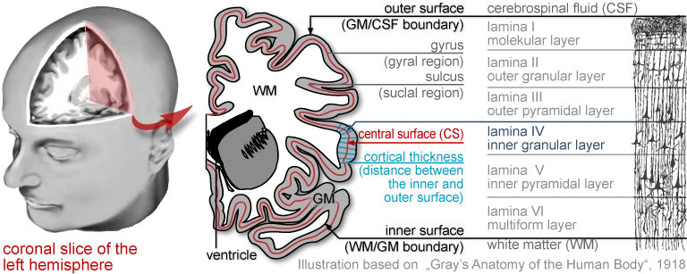
The brain is the most complex organ of the human body, and no two brains are alike. The study of the human brain is still in its infancy, yet rapid advances in image acquisition and processing have enabled increasingly refined characterisations of its micro- and macro-structure. Major efforts focus on mapping group differences (e.g., young vs. old, diseased vs. healthy, male vs. female), capturing changes over time (e.g., from infancy to old age, or in the framework of neuroplasticity after a clinical intervention), and assessing correlations of brain attributes (e.g., measures of length, volume, shape) with behavioural, cognitive, or clinical parameters.
CAT is a powerful suite of tools for morphometric analyses with an intuitive graphical user interface, and it can also be used as a shell script. CAT is suitable for beginners, casual users, experts, and developers alike, providing a comprehensive set of analysis options, workflows, and integrated pipelines.
The available analysis streams support voxel-, surface-, and region-based morphometric analyses. Importantly, CAT includes various quality control options and covers the entire analysis workflow, from cross-sectional or longitudinal data processing to statistical analysis and visualisation of results.
Overview of the manual
This manual is intended to help users perform a computational anatomy analysis using the CAT Toolbox. Although it mainly focuses on voxel-based morphometry (VBM), other variants of computational analysis such as deformation-based morphometry (DBM), surface-based morphometry (SBM), and region of interest (ROI) morphometric analyses are also presented and can be applied with few changes.
The manual can be divided into four main sections:- First, a quick guide on how to get started is provided. This section covers downloading and installing the software and starting the Toolbox, and includes a brief overview of the steps of a VBM analysis.
- This is followed by a detailed description of a basic VBM analysis that guides you step by step through the entire process—from preprocessing to contrast selection. This description should provide the information needed to analyse most studies.
- Specific cases of VBM analyses require adapting the basic workflow. These cases include longitudinal studies and studies in children or special patient populations. Relevant changes to a basic VBM analysis, and how to apply them, are described here. Only the changes are described; steps such as quality control or smoothing are not repeated.
- The guide concludes with additional information about spaces after registration, naming conventions, and other hints.
Quick start guide
VBM data
Required steps
- Segment data using defaults (use Segment Longitudinal Data for longitudinal data).
The resulting segmentations that can now be used for VBM are saved in the "mri" folder and are named "mwp1" for grey matter and "mwp2" for white matter. For BIDS data, all results are instead saved in "derivatives/CAT26.0_<revision>/sub-*/[ses-*/]anat" in the dataset root, without the "mri", "report", and "surf" subfolders (see Output folder and BIDS/derivatives behaviour). If you have used the longitudinal pipeline, both longitudinal models are saved by default, and the segmentations for grey matter are named "mwp1r" for the model for detecting small changes and "mwmwp1r" for the model for detecting larger changes. Details: Segment Data - Estimate total intracranial volume (TIV) to correct for different brain sizes and volumes.
Select the XML files that are saved in the "report" folder (for BIDS data in the derivatives folder). Details: Estimate TIV - Check data quality with Sample Homogeneity for VBM data (optionally include TIV and age as nuisance variables).
Select the grey or white matter segmentations from the first step. Details: Check Sample Homogeneity - Smooth data (recommended starting value: 6 mm1).
Select the grey or white matter segmentations from the first step. Details: Smooth - Specify the Basic Models with the smoothed grey or white matter segmentations and check design orthogonality and sample homogeneity:
- Select "Two-sample t-test" or "Multiple regression", or use "Full factorial" for any cross-sectional data.
- Use "Flexible factorial" for longitudinal data.
- Use TIV as a covariate (confound) to correct for different brain sizes.
- Select threshold masking with an absolute value of 0.1. You can increase this to 0.2 or even 0.25 if you still notice non-brain areas in your analysis.
- If you observe a considerable correlation between TIV and any other parameter of interest, it is advisable to use global scaling with TIV. For more information, refer to Orthogonality.
- Estimate the model and then call Results. Details: estimating the model
Optional steps
- Transform and Threshold SPM-maps to (log-scaled) p-maps or correlation maps.
- Try Threshold-Free Cluster Enhancement (TFCE) with the SPM.mat file of a previously estimated statistical design.
- Overlay Selected Slices. If you are using log-p scaled maps from "Transform SPM-maps" without thresholds or the TFCE_log maps, use the following values as the lower limit for the colormap: 1.3 (P<0.05); 2 (P<0.01); 3 (P<0.001).
- Use Surface Overlay for visualisation of your results. Select the results (preferably saved as log-p maps with "Transform SPM-maps" or the TFCE_log maps with the different methods for multiple comparison correction) to display rendering views, slice overlay, and a glassbrain of your results.
- Estimate results for ROI analysis using Analyze ROIs. Here, the SPM.mat file of the already estimated statistical design will be used. For more information, see Region of interest (ROI) analysis.
Additional surface data
Required steps
- Segment data and select "Surface and thickness estimation" under "Writing options" (for longitudinal data use Segment Longitudinal Data).
The surface data are saved in the folder "surf" (for BIDS data in the derivatives folder, see Output folder and BIDS/derivatives behaviour) and are named "?h.thickness.*" for cortical thickness. Details: Segment Data - Resample and smooth surface data (suggested starting value 12 mm for cortical thickness and sulcal depth and 20–25 mm for folding measures1, use the default merging of hemispheres).
Select the "lh.thickness.*" data in the folder "surf". The resampled data are named "s12.mesh.thickness.resampled_32k.*" for 12 mm smoothed, merged hemispheres that were resampled to 32k template space. Details: surface-based morphometry - Check data quality of the resampled data using Sample Homogeneity. Details: Check Sample Homogeneity
- Build Basic Models for the resampled data and check design orthogonality and sample homogeneity.
- Select "Two-sample t-test" or "Multiple regression" or use "Full factorial" for any cross-sectional data.
- Use "Flexible factorial" for longitudinal data.
- TIV is not necessary as a covariate (confound) because cortical thickness or other surface values are usually not dependent on TIV.
- No threshold masking is needed.
- If you find a considerable correlation between a nuisance parameter and any other parameter of interest, it is advisable to use global scaling with that parameter. For more information, refer to Orthogonality.
- Estimate the surface model and finally call Results. Details: estimating the model
Optional steps
- Extract Additional Surface Parameters (e.g. surface area, sulcal depth, gyrification, cortical complexity). Run this after segmentation and before resampling.
- Transform and Threshold SPM-maps to (log-scaled) p-maps or correlation maps.
- Try Threshold-Free Cluster Enhancement (TFCE) with the SPM.mat file of a previously estimated statistical design.
- Use Surface Overlay for visualisation of your results. Select the results (preferably saved as log-p maps with "Transform SPM-maps" or the TFCE_log maps with the different methods for multiple comparison correction) for the merged hemispheres to display rendering views of your results.
- Extract ROI-based Surface Values such as gyrification or fractal dimension to provide ROI analysis. Since version 12.7 extraction of ROI-based thickness is not necessary anymore because this is now included in the segmentation pipeline.
- Estimate results for ROI analysis using Analyze ROIs. Here, the SPM.mat file of the already estimated statistical design will be used. For more information, see Region of interest (ROI) analysis.
Additional options
Additional parameters and options are displayed in the CAT expert mode. Please note that this mode is for experienced users only.
Errors during preprocessing
If errors occurred during preprocessing, CAT asks whether you want to send an error message. If you confirm, a mail to vbmweb@gmail.com is prepared that contains the content of the XML file of the failed data set, and the XML file (cat_*.xml) and the log file (catlog_*.txt) are opened in the editor. Please copy their content into the mail or attach both files if this was not done automatically.
1Note on filter sizes for Gaussian smoothing
Smoothing increases the signal-to-noise ratio. The matched filter theorem states that the filter that matches your signal maximizes the signal-to-noise ratio. If we expect signal with a Gaussian shape and a FWHM of, say, 6 mm in our images, then this signal will be best detected after we smooth our images with a 6 mm FWHM Gaussian filter. If you are trying to study small areas like the amygdala, you can use smaller filter sizes because of the small size of these regions. For larger regions like the cerebellum, the effects are better detected with larger filters.
Please also note that for the analysis of cortical folding measures such as gyrification or cortical complexity the filter sizes have to be larger (i.e. in the range of 20–25 mm). This is due to the underlying nature of this measure that reflects contributions from both sulci as well as gyri. Therefore, the filter size should exceed the distance between a gyral crown and a sulcal fundus.
Getting started
Download and installation
- The CAT Toolbox runs within SPM. That is, SPM must be installed and added to your MATLAB search path before the CAT Toolbox can be installed (see the SPM site and SPM Wiki for more help).
- Download and unzip the CAT Toolbox. You will get a folder named "CAT", which contains various MATLAB files and compiled scripts. Copy the folder "CAT" into the SPM "toolbox" folder.
- On newer macOS systems (10.15 or higher), the binaries and MEX files of a downloaded zip file are quarantined by Gatekeeper. CAT removes this quarantine for its own files when it is started; if this fails, run
xattr -dr com.apple.quarantine /path/to/spm/toolbox/CATin a Terminal. For SPM itself, you may need to follow the SPM installation instructions to prevent issues with MEX files. - Older CAT versions can be found here.
Starting the toolbox
- Start MATLAB
- Start SPM (i.e., type "spm pet")
- Select "CAT" from the SPM menu (see Figure 1). You will find the drop-down menu between the "Display" and the "Help" button (you can also call the Toolbox directly by typing "CAT" on the MATLAB command line). This will open the CAT Toolbox as an additional window (see Figure 2).
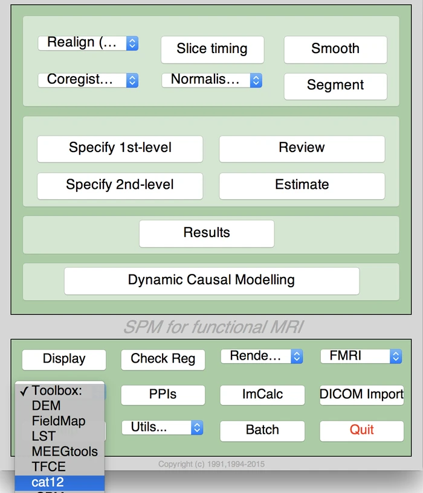
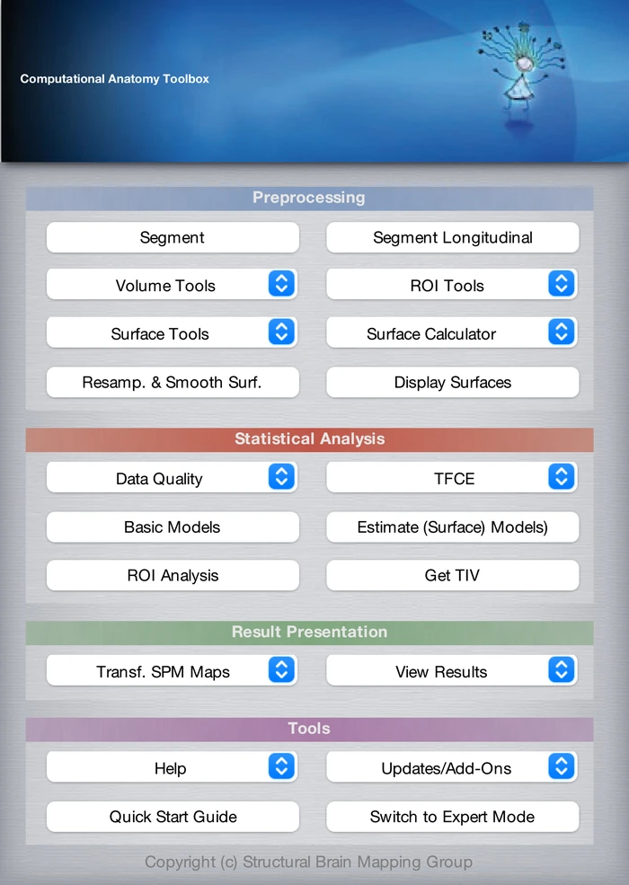
Calling CAT from the UNIX command line
You can also call CAT as a shell script from the Unix command line. This makes it possible to run the process completely in the background without graphical output and distributes all given data to parallel jobs. This can be useful if you want to run CAT on a computer cluster.
You can use the shell scripts cat_batch_cat.sh or cat_batch_long.sh (for longitudinal data). Please call the scripts for more information on how to define optional defaults files, for example.
Standalone versions (precompiled)
The advantage of the standalone version is that no MATLAB license is needed. Only the (free) MATLAB Runtime R2023b (v232) has to be downloaded. However, there are some limitations (e.g. no parallelization and no interactive help in the GUI version) and the standalone version is mainly intended to run without GUI on Unix systems. Please check the ENIGMA CAT site for more information and examples to call CAT from shell scripts.
The MATLAB Compiler Runtime (MCR) enables you to run applications compiled within MATLAB using MATLAB Compiler. MCR does not require a MATLAB license and can be used to run the MATLAB compiled program on computers which do not have MATLAB installed.
Older versions (CAT12.9 or newer) can be found here.
Basic VBM analysis (overview)
The CAT Toolbox comes with different modules, which may be used for analysis. Usually, a VBM analysis comprises the following steps:
(a) Preprocessing:- T1 images are normalized to a template space and segmented into grey matter (GM), white matter (WM), and cerebrospinal fluid (CSF). The preprocessing parameters can be adjusted via the module "Segment Data".
- After the preprocessing is finished, a quality check is highly recommended. This can be achieved via the modules "Single Slice Display" and "Check Sample Homogeneity". Both options are located in the CAT window under "Data Quality". Furthermore, quality parameters are estimated and saved in XML files for each data set during preprocessing. These quality parameters are also printed on the report PDF-page and can be additionally used in the module "Check Sample Homogeneity".
- Before entering the GM images into a statistical model, image data needs to be smoothed. Of note, this step is not implemented in the CAT Toolbox but achieved via the standard SPM module "Smooth".
- The smoothed GM images are entered into a statistical analysis. This requires building a statistical model (e.g. t-tests, ANOVAs, multiple regressions). This is done by the standard SPM modules "Specify 2nd-level" or preferably "Basic Models" in the CAT window covering the same function but providing additional options and a simpler interface optimized for structural data.
- The statistical model is estimated. This is done with the standard SPM module "Estimate" (except for surface-based data where the function "Estimate (Surface) Models" should be used instead).
- If you have used total intracranial volume (TIV) as a confound in your model to correct for different brain sizes, it is necessary to check whether TIV shows a considerable correlation with any other parameter of interest and to use global scaling as an alternative approach if needed.
- After estimating the statistical model, contrasts are defined to get the results of the analysis. This is done with the standard SPM module "Results".
The sequence of "preprocessing → quality check → smoothing → statistical analysis" remains the same for every VBM or SBM analysis, even when different steps are adapted (see Processing of Data such as Children).
A few words about the Batch Editor...- As soon as you select a module from the CAT Toolbox menu, a new window (the Batch Editor) will open. The Batch Editor is the environment where you will set up your analysis (see Figure 3). For example, an "<-X" indicates where you need to select files (e.g. your image files, the template, etc.). Other parameters have either default settings (which can be modified) or require input (e.g. choosing between different options, providing text or numeric values, etc.).
- Once all missing parameters are set, a green arrow will appear on the top of the window. Click this arrow to run the module or select "File → Run Batch". It is very useful to save the settings before you run the batch (click on the disk symbol or select "File → Save Batch").
- Of note, you can always find helpful information and parameter-specific explanations at the bottom of the Batch Editor window.
Additional CAT-related information can be found by selecting "Website" in the CAT window (Help → Website), which opens the website of the Structural Brain Mapping Group, or in this manual (Help → Interactive Manual).
- All settings can be saved either as a .mat file or as a .m script file and reloaded for later use. The .m script file has the advantage of being editable with a text editor.
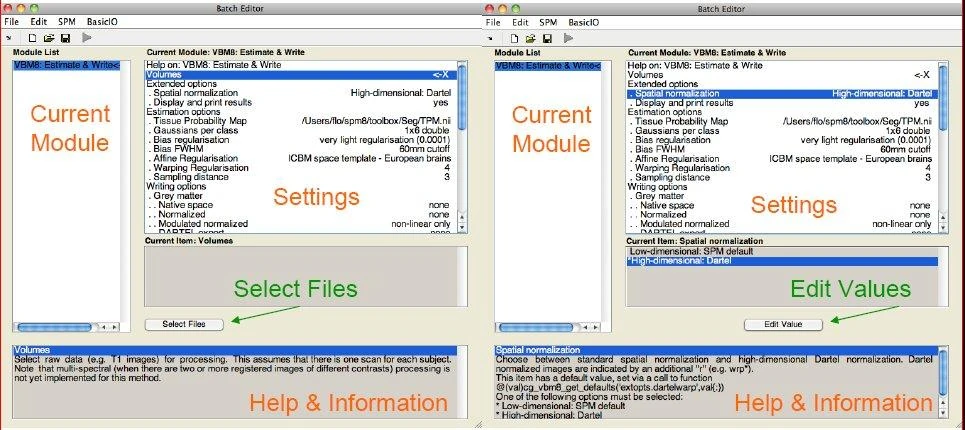
Overview of CAT processing
CAT major processing steps
As shown in Figure 4, CAT's processing workflow comprises two main steps: voxel-based processing and surface-based processing. The former is a prerequisite for the latter, but not the other way round. That is, while voxel-based processing is always required for surface-based analyses, users not interested in surface-based analyses can simply omit this second step to save processing time. The "Voxel-based processing" step (Figure 4, left) can be thought of as one module for tissue segmentation and another one for spatial registration. An optional third module allows for the generation of ROIs and the calculation of ROI-based measures. The "Surface-based processing" step (Figure 4, right) can be thought of as one module for surface creation and another one for surface registration. An optional third module allows for the generation of surface-based ROIs and the calculation of ROI-based measures. As shown in Figure 4, the different modules utilize different priors, templates, and atlases. Those are briefly explained in the next paragraph.
Voxel-based processing: While the final tissue segmentation in CAT is independent of tissue priors, the segmentation procedure is initialized using Tissue Probability Maps (TPMs). The standard TPMs (as provided in SPM) suffice for the vast majority of applications, and customized TPMs are only recommended for data obtained in young children. Please note that these TPMs should contain 6 classes: GM/WM/CSF and 3 background classes. For spatial registration, CAT uses Geodesic Shooting (Ashburner and Friston, 2011) or the older Dartel approach (Ashburner, 2007) with predefined templates. Those templates are an appropriate choice for most studies and, again, sample-specific Shooting templates may only be advantageous for young children. For the voxel-based ROI analyses, CAT offers a selection of volume-based atlases in the predefined template space. Thus, any atlas-based ROI analysis requires a normalization of the individual scans to CAT's default Shooting template. On that note, the aforementioned creation and selection of a customized (rather than the predefined) Dartel or Geodesic Shooting template will disable the third module for the voxel-based ROI analysis.
Surface-based processing: During the surface registration, the cortical surfaces of the two hemispheres are registered to the FreeSurfer "FsAverage" template (as provided with CAT). For surface-based ROI analyses, CAT provides a selection of surface-based atlases. As the surface registration module uses the FreeSurfer "FsAverage" template, surface-based ROI analyses are not impacted by any template modification during voxel-based processing. In contrast to voxel-based ROI analyses, surface-based ROI analyses can, therefore, be applied regardless of whether the predefined or customized versions of the Dartel or Geodesic Shooting template have been used.
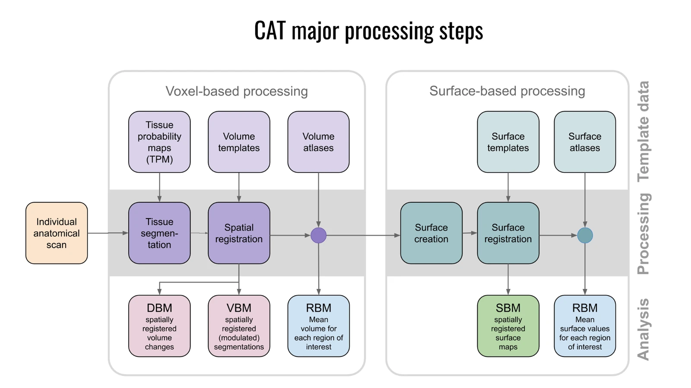
CAT processing steps in brief
The modules described in the previous section help understand CAT's overall processing workflow, including its priors, templates, and atlases. Also, data processing in CAT can be separated into three main processes: (1) the initial voxel-based processing, (2) the refined voxel-based processing, and (3) the surface-based processing (optional), as summarized below.
The "initial voxel-based processing" begins with a spatially adaptive non-local means (SANLM) denoising filter, which is followed by internal resampling. The data are then bias-corrected and affine-registered followed by the standard SPM "unified segmentation". The outcomes of the latter step will provide the starting estimates for the subsequent refined voxel-based processing.
The "refined voxel-based processing" uses the output from the unified segmentation and proceeds with skull-stripping of the brain, a local intensity transformation of all tissue classes, the parcellation of the brain, and the detection of local white matter hyperintensities, followed by the final adaptive maximum a posteriori (AMAP) segmentation with partial volume estimation. As a last default step, the tissue segments are spatially normalized to a common reference space using Geodesic Shooting registrations.
Optionally, the "surface-based processing" will be run following the completion of the voxel-based processing steps. Here, the cortical thickness estimation and reconstruction of the central surface occur in one step using a projection-based thickness (PBT) method. Subsequently, the individual central surfaces are spatially registered to the FreeSurfer "FsAverage" template.
The methods used in these steps are described in detail in the Methods sections Voxel-based processing and Surface-based processing.
Preprocessing data
First module: Segment Data
Please note that additional parameters for expert users are displayed in the GUI if you set the option cat.extopts.expertgui to "1" in cat_defaults.m or call CAT by:
CAT('expert')
CAT → Preprocessing → Segment
Parameters:
- Volumes <-X → Specify... → [select the new files] → Done
- Select one volume for each subject. As the Toolbox does not support multispectral data (i.e., different imaging methods for the same brain, such as T1-, T2-, diffusion-weighted, or CT images), it is recommended to choose a T1-weighted image.
- Importantly, the images need to be in the same orientation as the priors; you can double-check and correct them by using "Display" in the SPM menu. The priors are located in your SPM folder (SPM → tpm → TPM.nii).
- Split job into separate processes → [use defaults or modify]
- To use multi-threading, the CAT segmentation job with multiple subjects can be split into separate processes that run in the background. If you don't want to run processes in the background then set this value to 0.
- Keep in mind that each process needs about 1.5–2 GB of RAM, which should be considered when choosing the appropriate number of processes.
- Options for initial SPM preprocessing → [use defaults or modify]
- The defaults provide a solid starting point. The SPM tissue probability maps (TPMs) are used for the initial spatial registration and segmentation. Alternatively, customized TPMs can be chosen (e.g. for pediatric data) that were created with the Template-O-Matic (TOM) Toolbox. Please note that these TPMs should contain 6 classes: GM/WM/CSF and 3 background classes.
- Extended options for CAT preprocessing → [use defaults or modify]
- Again, the defaults provide a solid starting point. Using the extended options, you can adjust specific parameters or the strength of different corrections ("0" means no correction and "0.5" is the default value that works best for a large variety of data).
- CAT provides a template for the high-dimensional Shooting registration that should work for most data. However, a customized Shooting template can be selected (e.g. for children data) that was created using the Shooting toolbox. For more information on the necessary steps, see the section Customized Dartel or Shooting template.
- Writing options → [use defaults or modify]
- For GM and WM image volumes see information about native, normalized, and modulated volumes.
Note: The default option "Modulated normalized" results in an analysis of relative differences in regional GM volume that have to be corrected for individual brain size in the statistical analysis using total intracranial volume (TIV). - A Bias, noise and global intensity corrected T1 image, in which MRI inhomogeneities and noise are removed and intensities are globally normalized, can be written in normalized space. This is useful for quality control and also to create an average image of all normalized T1 images to display/overlay the results.
Note: For a basic VBM analysis, use the defaults. - A partial volume effect (PVE) label image volume is written in native space by default (in expert mode, it can also be written in normalized space or as a DARTEL export file). This is useful for quality control.
Note: For a basic VBM analysis, use the defaults. - The Jacobian determinant for each voxel can be written in normalized space. This information can be used to do a Deformation-Based Morphometry (DBM) analysis.
Note: For a basic VBM analysis, this is not needed. - Finally, deformation fields can be written. This option is useful to re-apply normalization parameters to other co-registered images (e.g. fMRI or DTI data).
Note: For a basic VBM analysis, this is not needed.
- For GM and WM image volumes see information about native, normalized, and modulated volumes.
Output folder and BIDS/derivatives behaviour
The writing location is controlled by Use BIDS directory structure? and, for the "BIDS else output folder" option, by the Output folder entry. By default, the output folder is derivatives/CAT26.0_<revision>. A leading ../ (e.g. ../derivatives/CAT) places the output folder one level higher, but this is only supported by the "BIDS else output folder" option (and the expert option "Always output folder no BIDS"). For the default "BIDS else CAT subfolders" option, the corresponding entry ("BIDS only output folder") is only shown in expert mode, and a leading ../ is removed with a warning.
- Always CAT subfolders no BIDS
- Ignore BIDS and always write CAT-style subfolders next to input files.
- BIDS else CAT subfolders (default)
- BIDS input: writes to dataset-level derivatives (e.g.
.../derivatives/CAT/sub-01/ses-01/anat/...). - non-BIDS input: writes CAT-style subfolders (e.g.
mri,surf,report) next to each input file.
- BIDS input: writes to dataset-level derivatives (e.g.
- BIDS else output folder
- BIDS input: same BIDS derivatives handling as above.
- non-BIDS input: writes CAT-style subfolders into the output folder relative to the folder of each input file (e.g.
.../subject/derivatives/CAT/mri/...).
- Always output folder no BIDS (expert mode only)
- Always writes relative to the current input file location and ignores BIDS.
Practical recommendation: Use one mode consistently within a project and avoid mixing already preprocessed derivatives files with raw inputs in the same run. For repeated processing of files already located in a CAT derivatives tree, CAT keeps the derivatives root instead of creating nested derivatives folders.
The resulting files are saved in the respective subfolders and follow the CAT naming convention.
Note: If the segmentation fails, this is often due to an unsuccessful initial spatial registration. In this case, you can try to set the origin (anterior commissure) in the Display tool. Place the cursor roughly on the anterior commissure and press "Set Origin". The now displayed correction in the coordinates can be applied to the image with the button "Reorient". This procedure must be repeated for each data set individually.
Second module: Display Slices (optional)
CAT → Data Quality → Single Slice Display
Parameters:
- Sample data <-X → Specify... → [select the new files] → Done
- Select the newly written data [e.g. the "wm*" files, which are the normalized bias-corrected volumes]. This tool will display one horizontal slice for each subject, thus giving a good overview of whether the segmentation and normalization procedures yielded reasonable results. For example, if the native volume had artifacts or if the native volumes had a wrong orientation, the results may look odd. Solutions: Use "Check Reg" from the SPM main menu to make sure that the native images have the same orientation as the MNI Template (e.g. "SPM → canonical → avg152T1.nii"). Adjust if necessary using "Display" from the SPM main menu.
- Proportional scaling? → [use defaults or modify]
- Check "yes" if you display T1 volumes.
- Spatial orientation
- Selected slice (in mm)? → [use defaults or modify]
- This module displays horizontal slices. This default setting provides a good overview.
Third module: Estimate Total Intracranial Volume (TIV)
CAT → Statistical Analysis → Get TIV
Parameters:
- XML files <-X → Specify... → [select XML files] → Done
- Select the XML files in the report-folder (for BIDS data in the derivatives folder) [e.g. the "cat_*.xml"].
- Save values → TIV only
- This option will save the TIV values for each data set in the same order as the selected XML files. Optionally you can also save the global values for each tissue class, which might be interesting for further analysis, but is not recommended if you are interested in only using TIV as a covariate.
- Output file → [use defaults or modify]
Please note that TIV is strongly recommended as a covariate for all VBM analyses to correct for different brain sizes. This step is not necessary for deformation- or surface-based data. Please also make sure that TIV does not correlate too much with your parameters of interest (please make sure that you use "Centering" with "Overall mean", otherwise the check for orthogonality in SPM sometimes does not work correctly). In this case, you should use global scaling with TIV.
Fourth module: Check Sample Homogeneity
CAT → Data Quality → Check Sample Homogeneity
Parameters:
- Data → New: Sample data <-X → Specify... → [select grey matter volumes] → Done
- Select the newly written data [e.g. the "mwp1*" files, which are the modulated (m) normalized (w) GM segments (p1)]. It is recommended to use the unsmoothed segmentations that provide more anatomical details. This tool visualises the quartic mean Z-score of each volume using a boxplot. Thus, it will help to identify outliers. Any outlier should be carefully inspected for artifacts or preprocessing errors using "Check worst" in the GUI. If you specify different samples the quartic mean Z-score is displayed in separate boxplots for each sample.
- Method to find quality measures → Select quality measures (leave empty for autom. search) → [optionally select XML files with quality measures]
- Optionally select the XML files that are saved for each data set. These files contain useful information about some estimated quality measures that can also be used for checking sample homogeneity. Please note that the order of the XML files must be the same as the other data files. Leave empty for automatically searching for these XML files. Alternatively, you can use the option "Select report folder" to specify the folder where these XML files are located.
- Global scaling with TIV → [use defaults or modify]
- This option is to correct quartic mean Z-scores for TIV by global scaling. It is only meaningful for VBM data.
- Nuisance variable → [enter nuisance variables if applicable]
- For each nuisance variable which you want to remove from the data before calculating the Z-scores, select "New: Vector/Matrix" and enter a vector with the respective variable for each subject (e.g. age in years). All variables have to be entered in the same order as the respective volumes. You can also type "spm_load" to upload a *.txt file with the covariates in the same order as the volumes. A potential nuisance parameter can be TIV if you check segmented data with the default modulation.
A window opens with a plot in which the quartic mean Z-scores for all volumes are displayed. Higher quartic mean Z-score values mean that your data are less similar to each other. The larger the quartic mean Z-score, the more deviant the data are from the sample mean. The reason we apply a power of 4 to the z-score (quartic) is to give outliers a greater weight and make them more obvious in the plot. If you click in the plot, the corresponding data are displayed in the lower right corner, which allows a closer look. The slider below the image changes the displayed slice. The pop-up menus in the top right-hand corner provide more options. Here you can select other measures that are displayed in the boxplot (e.g. optional quality measures such as noise, bias, weighted overall image quality if these values were loaded). Finally, the most deviant data can be displayed in the SPM graphics window to check the data more closely. For surfaces processed with CAT12.x, two additional measures are available (if you have loaded the XML files) to assess the quality of the surface extraction (the default surface reconstruction of CAT26.0 directly creates topology-correct surfaces and no longer estimates these measures). The Euler number gives you an idea about the number of topology defects, while the defect size indicates how many vertices of the surface are affected by topology defects. Because topology defects are mainly caused by noise and other image artifacts (e.g. motion), this gives you an impression about the potential quality of your extracted surface.
The boxplot in the SPM graphics window displays the quartic mean Z-score values for each subject and indicates the homogeneity of your sample. A high quartic mean Z-score in the boxplot does not always mean that this volume is an outlier or contains an artifact. If there are no artifacts in the image and if the image quality is reasonable, you don't have to exclude this volume from the sample. This tool is intended to support the process of quality checking and there are no clear criteria defined to exclude a volume based only on the quartic mean Z-score value. However, volumes with a noticeably higher quartic mean Z-score (e.g. above two standard deviations) are indicated and should be checked more carefully. The same holds for all other measures. Data with deviating values do not necessarily have to be excluded from the sample, but these data should be checked more carefully with the "Check worst" button. The order of the most deviating data is changed for every measure separately. Thus, the check for the most deviating data will give you a different order for quartic mean Z-score and other measures, which allows you to judge your data quality using different features.
If you have loaded quality measures, you can also display the product between weighted overall image quality (SIQR) and quartic mean Z-score. These two are the most important measures for assessing image quality. Mean Z-score measures the homogeneity of your data used for statistical analysis and is therefore a measure of image quality after preprocessing. Data that deviate from your sample increase variance and therefore minimize effect size and statistical power. The weighted overall image quality, on the other hand, combines measurements of noise and spatial resolution of the images before preprocessing. Although CAT uses effective noise-reduction approaches (e.g. spatial adaptive non-local means filter) pre-processed images are also affected and should be checked.
The product between SIQR and quartic mean Z-scores makes it possible to combine these two measures of image quality before and after preprocessing. A low product indicates good quality before and after preprocessing and means that SIQR is highly rated (resulting in a low nominal number/grade) and/or quartic mean Z-score is low. Both measures contribute to the product and are normalized before by their standard deviation. In the respective plot, the product value is colour-coded and each point can be selected to get the filename and display the selected slice to check data more closely.
Fifth module: Smooth
SPM menu → Smooth
Parameters:
- Images to Smooth <-X → Specify... → [select grey matter volumes] → Done
- Select the newly written data [e.g. the "mwp1" files, which are the modulated (m) normalized (w) grey matter segments (p1)].
- FWHM → [use defaults or modify]
- 6–8 mm kernels are widely used for VBM. To use this setting select "edit value" and type "6 6 6" for a kernel with 6 mm FWHM.
- Data Type → [use defaults or modify]
- Filename Prefix → [use defaults or modify]
Building the statistical model
Starting with CAT12.8, a new batch mode is used to create statistical models. Now, only cross-sectional and longitudinal data are distinguished and only factorial designs and a few other necessary models are offered, but they cover all possible designs. The advantage of this new batch is that it provides tailored options for VBM and many of the rather confusing and unnecessary options in "Basic Models" or "Specify 2nd-level" have now been removed and some VBM-specific options such as correction for TIV are newly provided. This should make it easier to build the statistical model in CAT. However, the "Full factorial" design now used for cross-sectional data is a bit more complicated to use. Still, you are free to use the old statistical batch from the SPM GUI ("Basic Models" or "Specify 2nd-level") as an alternative.
Here are some hints on how to relate the old models to the new factorial design. For cross-sectional VBM data, you usually have 1–n samples (which correspond to factor levels) and optionally covariates and nuisance parameters:
|
Number of factor levels |
Number of covariates |
Statistical Model |
|
1 |
0 |
one-sample t-test |
|
1 |
1 |
single regression |
|
1 |
>1 |
multiple regression |
|
2 |
0 |
two-sample t-test |
|
>2 |
0 |
ANOVA |
|
>1 |
>0 |
ANCOVA (for nuisance parameters) or Interaction (for covariates) |
General notes and options for statistical models
Please note that when using "Basic Models" in the CAT GUI, some unnecessary options have been removed compared to the "Basic Models" in SPM, and some useful options have been added. We therefore strongly recommend preferring to use the models in CAT, which offer some advantages especially when defining longitudinal designs.Covariates
This option allows for the specification of covariates and nuisance variables. TIV correction should instead be defined in "Correction of TIV".
Note that SPM does not make any distinction between effects of interest (including covariates) and nuisance effects. Covariates and nuisance parameters are handled in the same way in the GLM and differ only in the contrast used.
- Covariates → New: Covariate
- Vector <-X → enter the values of the covariates (e.g. age in years) in the same order as the respective file names or type "spm_load" to upload a *.txt file with the covariates in the same order as the volumes
- Name <-X → Specify Text (e.g. “age”)
- Interactions → None (or optionally "With Factor 1" to account for differences between the groups)
- Centering → Overall mean
Absolute masking is recommended for GM or WM volume data to ensure that you don’t analyse regions that don’t contain enough GM or WM or regions outside the brain. The default value of 0.1 is a good starting point for VBM data to ensure that only the intended tissue map is analysed. You can gradually increase this value up to "0.2" but you must make sure that your effects are not cut off.
If you analyse surface data, no additional masking is necessary.
For modulated VBM data, it is strongly recommended to always correct for TIV to account for different brain sizes. There are three options for TIV correction available:
- ANCOVA: Here, any variance that can be explained by TIV is removed from your data (i.e. in every voxel or vertex). This is the preferred option when there is no correlation between TIV and your parameter of interest. For example, a parameter of interest may be a variable in a multiple regression design that you want to relate to your structural data. If TIV is correlated with this parameter, not only will the variance explained by TIV be removed from your data, but also parts of the variance of your parameter of interest, which should be avoided.
Note that for two-sample t-tests and ANOVA with more than 2 groups, an interaction is modeled between TIV and group that prevents any group differences from being removed from your data, even if TIV differs between your groups.
Use the Check design orthogonality and homogeneity option to test for any correlations between your parameters. - Global scaling: If TIV correlates with your parameter of interest, you should rather use global scaling with TIV. The easiest way to define global scaling is to use "Basic Models" in the CAT GUI. If you prefer "Basic Models" in SPM, see here for a detailed description of how to define global scaling.
- No: Use this option to disable TIV correction for deformation- or surface-based data where TIV correction is not necessary.
In order to identify images with poor image quality or even artefacts, you can use Check Sample Homogeneity. The idea of this option is to check the Z-score of all files across the sample using the files that are already defined in SPM.mat.
The Z-score is calculated for all images and the mean for each image is plotted using a boxplot (or violin plot) and the indicated filenames. The larger the quartic mean Z-score, the more deviant the data are from the sample mean. The reason we apply a power of 4 to the z-score (quartic) is to give outliers a greater weight and make them more obvious in the plot. In the plot, outliers from the sample are usually isolated from the majority of data which are clustered around the sample mean. The quartic mean Z-score is plotted on the y-axis and the x-axis reflects the data order.
The advantage of re-checking sample homogeneity at this point is that the given statistical model (design) is used and potential nuisance parameters are taken into account. If you have longitudinal data, the time points of each data set are linked in the graph to indicate intra-subject data. Unsmoothed data (if available and in the same folder) are automatically detected and used. Finally, report files are used if present (i.e., if data has not been moved or the folders renamed) and quality parameters are loaded and displayed.
If you have modeled TIV as a nuisance parameter, you must check whether TIV is orthogonal (in other words independent) to any other parameter of interest in your analysis (e.g. parameters you are testing for) using Check design orthogonality and homogeneity. See here for a detailed description.
This experimental option allows the specification of a voxel-wise covariate. If you have more than one modality (i.e., functional and structural data), this can be used (depending on the contrast you define) to:
- Remove the confounding effect of structural data (e.g. GM) on functional data or
- Investigate the relationship (regression) between functional and structural data.
In addition, an interaction can be modeled to examine whether the regression between functional and structural data differs between two groups.
Please note that the saved vSPM.mat file can only be analysed with the TFCE toolbox r221 or newer.
There exist different options to call results after statistical analysis:
- General function to call results
- Slice Overlay to display volume results (i.e. VBM)
- Surface Overlay that allows you to overlay results from surfaces or volumes
Two-sample t-test
CAT → Statistical Analysis → Basic Models
Parameters:
- Directory <-X → Specify... → [select the working directory for your analysis] → Done
- Design → "Two-sample t-test"
- Group 1 scans → Specify... → [select the smoothed grey matter data for group 1; following this script these are the "smwp1" files] → Done
- Group 2 scans → Specify... → [select the smoothed grey matter data for group 2] → Done
- Independence → Yes
- Variance → Equal or Unequal
- Covariates
- Masking
- Threshold masking → Absolute → [specify a value (e.g. "0.1")]
- Implicit Mask → Yes
- Explicit Mask → <None>
- Correction of TIV → ANCOVA, Global scaling, or No
- Check design orthogonality and homogeneity → [use defaults]
Full factorial model (for a 2x2 ANOVA)
CAT → Statistical Analysis → Basic Models
Parameters:
- Directory <-X → Specify... → [select the working directory for your analysis] → Done
- Design → "Any cross-sectional data (Full factorial)"
- Factors → "New: Factor; New: Factor"
Factor- Name → [specify text (e.g. "sex")]
- Levels → 2
- Independence → Yes
- Variance → Equal or Unequal
- Name → [specify text (e.g. "age")]
- Levels → 2
- Independence → Yes
- Variance → Equal or Unequal
- Cells → "New: Cell; New: Cell; New: Cell; New: Cell"
Cell- Levels → [specify text (e.g. "1 1")]
- Scans → [select files (e.g. the smoothed GM data of the young males)]
- Levels → [specify text (e.g. "1 2")]
- Scans → [select files (e.g. the smoothed GM data of the old males)]
- Levels → [specify text (e.g. "2 1")]
- Scans → [select files (e.g. the smoothed GM data of the young females)]
- Levels → [specify text (e.g. "2 2")]
- Scans → [select files (e.g. the smoothed GM data of the old females)]
- Factors → "New: Factor; New: Factor"
- Covariates (see General notes and options for statistical models)
- Masking
- Threshold Masking → Absolute → [specify a value (e.g. "0.1")]
- Implicit Mask → Yes
- Explicit Mask → <None>
- Correction of TIV → ANCOVA, Global scaling, or No
- Check design orthogonality and homogeneity → [use defaults]
Multiple regression (linear)
CAT → Statistical Analysis → Basic Models
Parameters:
- Directory <-X → Specify... → [select the working directory for your analysis] → Done
- Design → "Multiple Regression"
- Scans → [select files (e.g. the smoothed GM data of all subjects)] → Done
- Covariates → "New: Covariate"
- Vector → [enter the values in the same order as the respective file names of the smoothed images]
- Name → [specify (e.g. "age")]
- Centering → Overall mean
- Intercept → Include Intercept
- Covariates
- Masking
- Threshold masking → Absolute → [specify a value (e.g. "0.1")]
- Implicit Mask → Yes
- Explicit Mask → <None>
- Correction of TIV → ANCOVA, Global scaling, or No
- Check design orthogonality and homogeneity → [use defaults]
Multiple regression (polynomial)
To use a polynomial model, you need to estimate the polynomial function of your parameter before analysing it. To do this, use the function cat_stat_polynomial (included with CAT >r1140):
y = cat_stat_polynomial(x,order)
where "x" is your parameter and "order" is the polynomial order (e.g. 2 for quadratic).
Example for polynomial order 2 (quadratic)
CAT → Statistical Analysis → Basic Models
Parameters:
- Directory <-X → Specify... → [select the working directory for your analysis] → Done
- Design → "Multiple Regression"
- Scans → [select files (e.g. the smoothed GM data of all subjects)] → Done
- Covariates → "New: Covariate"
- Vector → [specify linear term (e.g. "y(:,1)")]
- Name → [specify (e.g. "age-linear")]
- Centering → Overall mean
- Covariates → "New: Covariate"
- Vector → [specify quadratic term (e.g. "y(:,2)")]
- Name → [specify (e.g. "age-quadratic")]
- Centering → Overall mean
- Intercept → Include Intercept
- Covariates
- Masking
- Threshold masking → Absolute → [specify a value (e.g. "0.1")]
- Implicit Mask → Yes
- Explicit Mask → <None>
- Correction of TIV → ANCOVA, Global scaling, or No
- Check design orthogonality and homogeneity → [use defaults]
Full factorial model (interaction)
CAT → Statistical Analysis → Basic Models
Parameters:
- Directory <-X → Specify... → [select the working directory for your analysis] → Done
- Design → "Any cross-sectional data (Full factorial)"
- Factors → "New: Factor"
Factor- Name → [specify text (e.g. "sex")]
- Levels → 2
- Independence → Yes
- Variance → Equal or Unequal
- Cells → "New: Cell; New: Cell"
Cell- Levels → [specify text (e.g. "1")]
- Scans → [select files (e.g. the smoothed GM data of the males)]
- Levels → [specify text (e.g. "2")]
- Scans → [select files (e.g. the smoothed GM data of the females)]
- Factors → "New: Factor"
- Covariates → "New: Covariate"
- Covariate
- Vector → [enter the values in the same order as the respective file names of the smoothed images]
- Name → [specify (e.g. "age")]
- Interactions → With Factor 1
- Centering → Overall mean
- Covariate
- Masking
- Threshold Masking → Absolute → [specify a value (e.g. "0.1")]
- Implicit Mask → Yes
- Explicit Mask → <None>
- Correction of TIV → ANCOVA, Global scaling, or No
- Check design orthogonality and homogeneity → [use defaults]
Full factorial model (polynomial interaction)
To use a polynomial model you have to estimate the polynomial function of your parameter prior to the analysis. Use the function cat_stat_polynomial (provided with CAT >r1140) for that purpose:
y = cat_stat_polynomial(x,order)
where "x" is your parameter and "order" is the polynomial order (e.g. 2 for quadratic).
Example for polynomial order 2 (quadratic)
CAT → Statistical Analysis → Basic Models
Parameters:
- Directory <-X → Specify... → [select the working directory for your analysis] → Done
- Design → "Any cross-sectional data (Full factorial)"
- Factors → "New: Factor"
Factor- Name → [specify text (e.g. "sex")]
- Levels → 2
- Independence → Yes
- Variance → Equal or Unequal
- Cells → "New: Cell; New: Cell"
Cell- Levels → [specify text (e.g. "1")]
- Scans → [select files (e.g. the smoothed GM data of the males)]
- Levels → [specify text (e.g. "2")]
- Scans → [select files (e.g. the smoothed GM data of the females)]
- Factors → "New: Factor"
- Covariates → "New: Covariate; New: Covariate"
- Covariate
- Vector → [specify linear term (e.g. "y(:,1)")]
- Name → [specify (e.g. "age-linear")]
- Interactions → With Factor 1
- Centering → Overall mean
- Covariate
- Vector → [specify quadratic term (e.g. "y(:,2)")]
- Name → [specify (e.g. "age-quadratic")]
- Interactions → With Factor 1
- Centering → Overall mean
- Covariate
- Masking
- Threshold Masking → Absolute → [specify a value (e.g. "0.1")]
- Implicit Mask → Yes
- Explicit Mask → <None>
- Correction of TIV → ANCOVA, Global scaling, or No
- Check design orthogonality and homogeneity → [use defaults]
Estimating the statistical model
CAT → Statistical Analysis → Estimate (Surface) Models
Select SPM.mat which you just built.
Note that for surface data you should rather use this estimation option instead of "Estimate" in the SPM GUI, otherwise the underlying surface after calling the results would mistakenly be the surface of the first selected data set instead of the average surface.Checking for design orthogonality
If you have modeled TIV as a nuisance parameter, you must check whether TIV is orthogonal (in other words independent) to any other parameter of interest in your analysis (e.g. parameters you are testing for). This means that TIV should not correlate with any other parameter of interest, otherwise not only the variance explained by TIV is removed from your data, but also parts of the variance of your parameter of interest.
Please use "Overall mean" as "Centering" for the TIV covariate. Otherwise, the orthogonality check sometimes even indicates a meaningful co-linearity only because of scaling issues.
To check the design orthogonality, you have 3 options:
- Use the respective option in Basic Models in CAT.
- Use the Check design orthogonality and homogeneity function in CAT
- Use the Review function in the SPM GUI and select Design orthogonality in the menu.
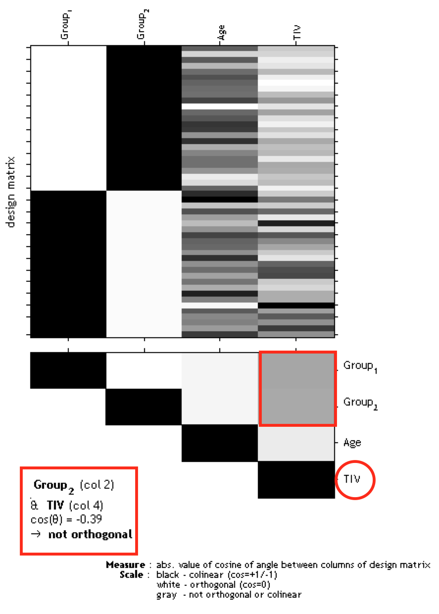
The larger the correlation between TIV and any parameter of interest, the more cautious one must be when using TIV as a nuisance parameter. In this case an alternative approach is to use global scaling with TIV. If you use Basic models in the SPM GUI, the settings below for this approach can be used.
Please note that when using "Basic Models" in the CAT GUI, the global scaling option prepares that for you, which eases the process and is the recommended way, and the three steps in the next list are not needed.- Global Calculation → User → Global Values <-X → Define the TIV values here
- Global Normalisation → Overall grand mean scaling → Yes → Grand mean scaled value → Define here the mean TIV of your sample (or as approximation a value of 1500 which might fit for the majority of data from adults)
- Normalisation → Proportional
This approach scales the data (proportionally) according to the individual TIV values. Instead of removing variance explained by TIV, all data are scaled by their TIV values. This is also similar to the approach that was used in VBM8 ("modulate for non-linear effects only"), where global scaling was internally used with an approximation of TIV (e.g. inverse of affine scaling factor).
Please note that global normalization also affects the absolute masking threshold as your images are now scaled to the "Grand mean scaled value" of the Global Normalization option. If you have defined the mean TIV of your sample (or an approximate value of 1500) here, no change of the absolute threshold is required. Otherwise, you will have to correct the absolute threshold because your values are now globally scaled to the "Grand mean scaled value" of the Global Normalization option.
An alternative approach for all models with more than one group should not be unmentioned. This is to use TIV as a nuisance parameter with interaction and mean centering with the factor "group". This interaction is automatically taken into account when you use the TIV ANCOVA correction in CAT Basic Models. That approach will result in separate columns of TIV for each group. The values for the nuisance parameters are here mean-centered for each group. As the mean values for TIV are corrected separately for each group, it is prevented that group differences in TIV have a negative impact on the group comparison of the image data in the GLM. Variance explained by TIV is here removed separately for each group without affecting the differences between the groups.
Unfortunately, no clear advice for either of these two approaches can be given, and the use of these approaches will also affect the interpretation of your findings.
Defining contrasts
SPM menu → Results → [select the SPM.mat file] → Done (this opens the Contrast Manager) → Define new contrast (i.e., choose "t-contrast" or "F-contrast"; type the contrast name and specify the contrast by typing the respective numbers, as shown below).
You can also use the SPM Batch Editor to automate that procedure:
SPM Batch Editor → SPM → Stats → Contrast Manager
Please note that all zeros at the end of the contrast don't have to be defined, but are sometimes retained for didactic reasons. However, a contrast must not have more entries than the design matrix has columns, otherwise SPM rejects it as "too long".
The columns of the design matrix are ordered as follows: first the groups (or cells) of your design or the constant of a multiple regression, then the covariates in the order in which they were entered (covariates defined under the general "Covariates" option come before the covariates of a multiple regression design), and finally TIV if you use "Correction of TIV → ANCOVA" (one column for multiple regressions; for two-sample t-tests and full factorial designs one column for each level of the (last) factor). With "Global scaling" or "No", no TIV column is added. Hence, TIV does not have to be included in the contrasts below, which are valid for all three options of "Correction of TIV". The design matrices shown below were created with CAT's "Basic Models" and the default "Correction of TIV → ANCOVA" and therefore show TIV in the last column(s): one column for the multiple regressions, one column per group for the two-sample t-test and the interaction models, and one column per level of the last factor ("age") for the 2x2 ANOVA. If TIV is split into several columns, each column contains the mean-centered TIV values of one group or factor level and zeros elsewhere.
|
t-test |
|
|
1 -1 |
|
-1 1 |
|
F-test |
|
|
eye(2)-1/2 |
|
eye(2) |
|
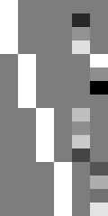 |
|
|
t-test |
|
|
1 -1 0 0 |
|
0 0 1 -1 |
|
1 0 -1 0 |
|
0 1 0 -1 |
|
1 1 -1 -1 |
|
1 -1 1 -1 |
|
1 -1 -1 1 |
|
-1 1 1 -1 |
|
F-test |
|
|
1 -1 0 0 |
|
0 0 1 -1 |
|
1 0 -1 0 |
|
0 1 0 -1 |
|
1 1 -1 -1 |
|
1 -1 1 -1 |
|
1 -1 -1 1 |
|
eye(4)-1/4 |
|
eye(4) |
|
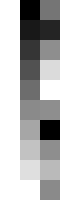 |
|
|
t-test |
|
|
0 1 |
|
0 -1 |
|
F-test |
|
|
0 1 |
|
The leading zero in the contrast indicates the constant (sample effect, 1st column in the design matrix). TIV is not part of the contrast, because with "Correction of TIV → ANCOVA" it is added as the last column (3rd column in the design matrix shown here). If you instead enter TIV (or any other nuisance parameter) under the general "Covariates" option, it is placed before the regression parameter (2nd column) and you need two leading zeros (e.g. "0 0 1" and "0 0 -1"). |
|
|
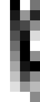 |
|
|
t-test |
|
|
0 1 0 |
|
0 0 1 |
|
0 -1 0 |
|
0 0 -1 |
|
F-test |
|
|
0 1 0 |
|
0 0 1 |
|
[zeros(2,1) eye(2)] |
|
The leading zero in the contrast indicates the constant (sample effect, 1st column in the design matrix), followed by the linear and the quadratic term. TIV is not part of the contrast, because with "Correction of TIV → ANCOVA" it is added as the last column (4th column in the design matrix shown here). If you instead enter TIV (or any other nuisance parameter) under the general "Covariates" option, it is placed before the linear term (2nd column) and you need two leading zeros (e.g. "0 0 1 0" for a positive linear effect). |
|
|
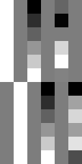 |
|
|
t-test |
|
|
0 0 1 -1 |
|
0 0 -1 1 |
|
F-test |
|
|
0 0 1 -1 |
|
[zeros(2,2) eye(2)] |
|
The two leading zeros in the contrast indicate the main effect "group" and should be always set to "0" in the contrast, because we are rather interested in the interaction. This also applies to the polynomial interaction below. The last two columns contain TIV for each group (added by "Correction of TIV → ANCOVA") and are not part of the contrasts. |
|
|
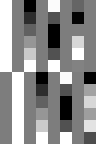 |
|
|
t-test |
|
|
0 0 1 -1 0 0 |
|
0 0 -1 1 0 0 |
|
0 0 0 0 1 -1 |
|
0 0 0 0 -1 1 |
|
F-test |
|
|
0 0 1 -1 0 0 |
|
0 0 0 0 1 -1 |
|
0 0 1 -1 0 0 |
|
[zeros(4,2) eye(4)] |
Defining F-contrasts
For ANOVAs (e.g. comparison between groups) the test for any difference between the groups can be defined with:
eye(n)-1/n
where n is the number of columns of interest.
For interaction effects (e.g. any interaction between covariate and group) you need to add leading zeros to leave out the group effects:
[zeros(n,m) eye(n)-1/n]
where m is the number of group effects.
For a regression design (e.g. any regression slope) you are not interested in differential effects as described above, but rather in any effect of a regression parameter:
[zeros(n,m) eye(n)]
where n is the number of columns of interest (e.g. regression parameters) and m is the number of leading columns you need to exclude (i.e. effects of no interest such as the constant or any other covariates of no interest).
In order to plot any contrast estimate or fitted response, however, you have to define the effects of interest by using:
[zeros(n,m) eye(n)]
where n is the number of columns of interest and m is the number of leading columns you need to exclude (i.e. effects of no interest such as the constant or any other covariates of no interest).
This F-contrast (effects of interest) is necessary to correctly plot contrast estimates or fitted responses. Thus, it's recommended to always define this contrast.
Getting Results
SPM menu → Results → [select a contrast from Contrast Manager] → Done
- Apply masking → none
- P value adjustment to control:
- none (uncorrected for multiple comparisons), set threshold to 0.001
- FDR (false discovery rate), set threshold to 0.05, etc. (only offered for voxel-level FDR, see note below)
- FWE (family-wise error), set threshold to 0.05, etc.
- Extent threshold: (either use 0 or specify the number of voxels)
Please note that "FDR" is only offered if voxel-level FDR is enabled with defaults.stats.topoFDR = 0 (e.g. spm_get_defaults('stats.topoFDR',0)). By default (topoFDR = 1 in spm_defaults.m), SPM uses topological FDR and only offers "FWE" and "none"; FDR-corrected p-values for peaks and clusters are then listed in the results table.
CAT for longitudinal data
Background
The majority of morphometric studies are based on cross-sectional data in which one image is acquired for each subject. However, to map structural changes over time (e.g., in the framework of use-dependent plasticity, neurodevelopment, or ageing), longitudinal designs that consider additional time points for each subject are necessary. The handling of these longitudinal data requires a customized processing, as a voxel- or point-wise comparability needs to be assured not only across subjects, but also across time points within subjects. This requires an inverse-consistent (or "symmetric") realignment as well as an intra-subject bias field correction (Ashburner and Ridgway, 2012; Reuter et al., 2010; Reuter and Fischl, 2011). Thus, CAT first realigns the images from all time points using inverse-consistent rigid-body registrations and applies intra-subject bias-field corrections. Subsequently, the resulting images are processed individually (see Figure 4) using the standard pipeline.
That is, images are tissue-classified and the necessary deformations for spatial registration to the standard template are estimated. However, instead of applying the individual spatial transformations (as done in a cross-sectional analysis), a mean transformation for all time points is calculated and applied to all individual images (Figure 6). The resulting normalized tissue segments can then be used for voxel-based analyses. Optionally, the processed images for all time points can be used to additionally extract the cortical surfaces and to calculate surface parameters, such as cortical thickness or diverse folding measures using the surface-based processing pipeline. Furthermore, the processing of the individual time points is initialized by the processed results from the (unbiased) average image. This reduces random variations in the processing procedure and improves the robustness and sensitivity of the overall longitudinal analysis. This latter processing stream of surface data is similar to the longitudinal approach employed in FreeSurfer (Reuter et al., 2010; Reuter and Fischl, 2011).
Please note that three different longitudinal models are offered. The first longitudinal model is optimized for processing and capturing smaller changes over time in response to short-term plasticity effects (e.g. from learning and training). This model will probably not be as sensitive for larger longitudinal changes where large parts of the brain change over time (e.g. atrophy due to Alzheimer's disease or ageing). This is due to the effect of estimating the parameters of spatial registration from the deformations of all time points and then applying them to all time points. If a large atrophy occurs between the time points, this can lead to a displacement of tissue boundaries and might result in areas with reduced volumes over time, which are surrounded by areas with increased volume due to these displacement problems. For data with larger volume changes over time, you should choose the longitudinal model, which is optimized to detect larger changes (e.g. due to ageing). This model also takes into account the deformations between time points and prevents the problems mentioned above. Finally, there also exists a longitudinal processing pipeline for neurodevelopmental data where we can also see changes in head size which should be taken into account.
Additional attention is then required for the setup of the statistical model. The following section therefore describes the data preprocessing and model setup for longitudinal data.
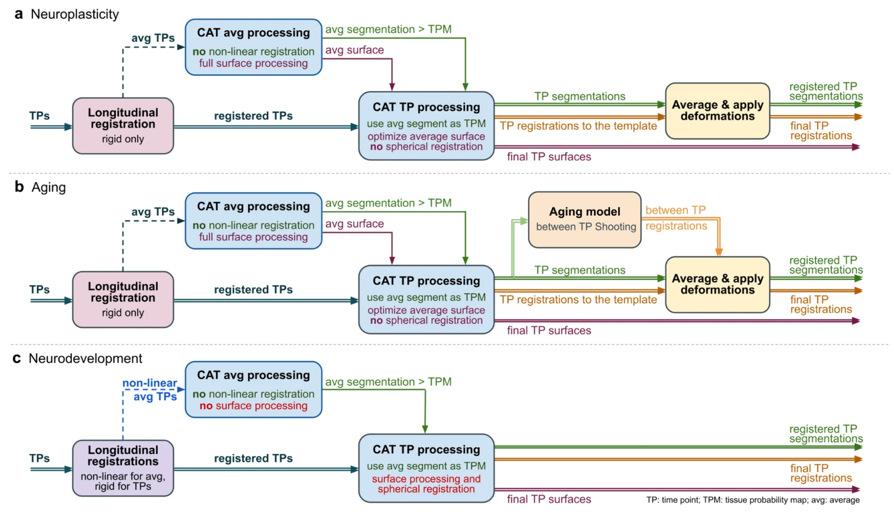
The first step in all three workflows is the creation of a high-quality average image over all time points. For this purpose, CAT realigns the images from all time points for each participant using inverse-consistent (or symmetric) rigid-body registrations and intra-subject bias field correction. While this is sufficient to create the required average image for the neuroplasticity and ageing workflows, the neurodevelopmental workflow requires non-linear registrations in addition. In either case, the resulting average image is segmented using CAT’s regular processing workflow to create a subject-specific tissue probability map (TPM). This TPM is used to enhance the time point-specific processing to create the final segmentations. The final tissue segments are then registered to MNI space to obtain a voxel-comparability across time points and subjects, which differs between all three workflows. In the neuroplasticity workflow, an average of the time point-specific registrations is created to register the tissue segments of all time points to MNI space. The ageing workflow does the same in principle but adds additional (very smooth) deformations between the individual images across time points to account for inevitable age-related changes over time (e.g., enlargements of the ventricles). In contrast, the neurodevelopmental workflow needs to account for major changes, such as overall head and brain growth, which requires independent non-linear registrations to MNI space of all images across time points (which are obtained using the default cross-sectional registration model).
For surface-based processing, the neuroplasticity and ageing models use the processing of the time point average image to create an average surface. The average is then adapted (deformed) to time point specific maps used in the surface creation, whereas the neurodevelopment workflow has to run the independent cross-sectional surface pipeline for each time point.
Preprocessing of longitudinal data - overview
The CAT Toolbox supplies a batch for longitudinal study design. Here, for each subject the respective images need to be selected. Intra-subject realignment, bias correction, segmentation, and spatial registration are calculated automatically. Preprocessed images are written as mwp1r* and mwp2r* for grey and white matter respectively. By selecting the optimized pipeline to detect larger changes an additional "mw" is prepended to the name due to the additional warping and modulation steps. To define the segmentation and registration parameters, the defaults in cat_defaults.m are used. Optionally, surfaces can be extracted for each time point. For the plasticity and ageing models, the realigned tissue segmentations are used for this step and the surface extraction is initialized by the surface of the average image, whereas the developmental model extracts the surfaces of each time point independently in the same way as in the cross-sectional pipeline.
Choice of longitudinal model and comparison to SPM longitudinal registration
SPM also offers a batch for pairwise or serial longitudinal registration. In contrast to CAT, this method relies on the deformations needed to non-linearly register the images of all time points to the mean image. Local volume changes can be calculated from these deformations, which are then multiplied (modulated) by the segmented mean image.
However, not only the underlying methods differ between SPM and the CAT longitudinal pipeline, but also the focus of possible applications. SPM additionally regularizes the deformations with regard to the time differences between the images and has its strengths more in finding larger effects over longer periods of time (e.g. ageing effects or atrophy). The use of deformations between the time points makes it possible to estimate and detect larger changes, while subtle effects over shorter periods of time in the range of weeks or a few months are more difficult to detect. In contrast, longitudinal preprocessing in CAT has been initially developed and optimized to detect more subtle effects over shorter periods of time (e.g. brain plasticity or training effects after a few weeks or even shorter times), but now also offers a longitudinal model that is optimized to detect larger changes. With these two different longitudinal models, CAT attempts to combine the advantages of both approaches, providing flexibility for a wide range of potential data.
Unfortunately, there is no clear recommendation for one method or the other method. As a rule of thumb, however, the following could apply: The shorter the time periods and the smaller the expected changes, the more likely the longitudinal model for small changes is the right choice. To find effects of ageing or atrophy due to a (neurodegenerative) disease after a longer period of time, I recommend the longitudinal model for large changes in CAT.
Please note that surface-based preprocessing and ROI estimates do not differ between the plasticity and the ageing model, as both models only differ in the spatial registration of the tissue segments to MNI space. In both models, the surface of the average image is used to initialize the surface extraction of each time point, whereas the developmental model runs the independent cross-sectional surface pipeline for each time point (see Figure 6).
Optional change of parameters for preprocessing
You can change the tissue probability map (TPM) via GUI or by changing the entry in the file cat_defaults.m (e.g. for children data). Any parameters that cannot be changed via the GUI must be set in the file cat_defaults.m:
Change your working directory to "/toolbox/CAT" in your SPM directory:
→ select "Utils... → CD" in the SPM menu and change to the respective folder.
Then enter "open cat_defaults.m" in your MATLAB command window. The file is opened in the editor. If you are not sure how to change the values, open the module "Segment Data" in the batch editor as a reference.
Preprocessing of longitudinal data
CAT → Segment longitudinal data
Parameters:
- Longitudinal Data
- Select mode of longitudinal data selection for time points or subjects
- In case of "timepoints" you can create multiple time points where each time point has to contain the same number and order of subjects.
- If you have a varying number of time points for each subject you have to use the "subjects" mode where you have to define the files of each subject separately.
- Select all data for each subject or time point. As the Toolbox does not support multispectral data yet (i.e., different imaging methods for the same brain, such as T1-, T2-, diffusion-weighted or CT images), choose a T1-weighted image.
- Select "New: Subject" or "New: Timepoint" to add data for a new subject or time point
- Longitudinal Model
- Depending on your type of longitudinal data you can select the pipeline that is optimized for detecting small changes (e.g. brain plasticity or training effects after a few weeks or even shorter periods of time), large changes (e.g. ageing effects), or large changes with brain/head growth (e.g. developmental effects). The default option "Save both plasticity and aging models" saves the results of both the plasticity and the ageing model in one run.
→ For all other options you can follow the instructions for preprocessing of cross-sectional data as described before. Please note that not all writing options are available for longitudinal data.
Longitudinal note on output folders: If you use BIDS/derivatives output modes, keep one consistent derivatives setting for all time points of a subject. This avoids ambiguous folder layouts and ensures reports (e.g. catlong_*.xml) are written to the expected report folder.
For the naming conventions of all written files see Naming Convention of Output Files. The GM segments are mwp1r* for the plasticity model or mwmwp1r* for the ageing model with larger changes, the WM segments are named mwp2r* (mwmwp2r*). With the default option "Save both plasticity and aging models", both versions are saved. The developmental model writes mwp1r* and mwp2r*. Without modulation ("Modulated GM/WM segmentations" → "No"), the "m" is omitted for the plasticity and ageing models, i.e. wp1r* and wwp1r* are written.
Statistical analysis of longitudinal data - overview
The main interest in longitudinal studies is in the change of tissue volume over time in a group of subjects or the difference in these changes between two or more groups. The setup of the statistical model needed to evaluate these questions is described in three examples. First, the case of only one group of 8 subjects with 2 time points each (e.g. normal ageing) is shown. Then, the case of two groups of subjects with 4 time points is described. Here, we can test for a time by group interaction if we assume that the time points are acquired at the same time and are therefore comparable between the groups. If the time points are not acquired at the same time and are therefore not comparable between the groups, we can use the third design. This design models a time by group interaction using an additional covariate (e.g. age at scanning) and offers more flexibility.
These examples should cover most analyses - the number of time points / groups just needs to be adjusted. Unlike the analysis of cross-sectional data, as described above, we need to use the flexible factorial model, which takes into account that the time points for each subject are dependent data.
Please note that it's not strictly necessary to use TIV as a covariate (nuisance) because we are analysing intra-individual effects that do not need to be corrected and TIV should not change over time.
Again, we recommend using "Basic Models" in the CAT GUI, where some unnecessary options have been removed compared to "Basic Models" in SPM and some useful options have been added. The same notes and options apply here as for the cross-sectional designs.Longitudinal data in one group
This model supports the analysis between all time points for one group.
CAT → Statistical Analysis → Basic Models
Parameters:
- Directory <-X → Specify... → [select the working directory for your analysis] → Done
- Design → "Longitudinal data (Flexible factorial)"
- Factors → "New: Factor; New: Factor"
SPM is internally handling some keyword factors such as “subject” or “repl”. If you use “subject” as keyword for the first factor the conditions can be defined more easily by only labeling the time points as input (see below).Factor
- Name → [specify text (e.g. "subject")]
- Independence → Yes
- Variance → Equal
- Name → [specify text (e.g. "time")]
- Independence → No
- Variance → Equal
There are 3 different methods to define all subjects, groups and time points:- Subjects: quite flexible, but annoying to define for many subjects
- Specify all: quite flexible, but you have to know how to define a factor matrix (i.e. matrix with repetitions, subjects, groups and time points).
- Groups & Timepoints: easy to define, but restricted to designs with the same number of timepoints per subject
- Specify Subjects or all Scans & Factors → "Subjects" → "New: Subject; New: Subject; New: Subject; New: Subject; New: Subject; New: Subject; New: Subject; New: Subject"
Subject- Scans → [select files (the smoothed GM data of the 1st Subject)]
- Conditions → "1 2" [for two time points]
- Scans → [select files (the smoothed GM data of the 2nd Subject)]
- Conditions → "1 2" [for two time points]
It is also possible to deal with missing values for the data. For example, if you normally have three time points, but for some data only two time points for the baseline and the last scan are available, this can be defined by "1 3".Subject- Scans → [select files (the smoothed GM data of the 3rd Subject)]
- Conditions → "1 2" [for two time points]
- Scans → [select files (the smoothed GM data of the 4th Subject)]
- Conditions → "1 2" [for two time points]
- Scans → [select files (the smoothed GM data of the 5th Subject)]
- Conditions → "1 2" [for two time points]
- Scans → [select files (the smoothed GM data of the 6th Subject)]
- Conditions → "1 2" [for two time points]
- Scans → [select files (the smoothed GM data of the 7th Subject)]
- Conditions → "1 2" [for two time points]
- Scans → [select files (the smoothed GM data of the 8th Subject)]
- Conditions → "1 2" [for two time points]
- Main effects & Interactions → "New: Main effect; New: Main effect"
Main effect- Factor number → 2
- Factor number → 1
Don’t use covariates that don’t change over time, such as sex or TIV. These are treated as constant values and ignored in the statistical analysis because the subject factors are defined anyway.
In general, it’s quite difficult to use meaningful covariates in a flexible factorial design that make sense, and in most designs it’s not recommended unless you are absolutely sure of what you are doing.
- Factors → "New: Factor; New: Factor"
- Covariates
- Masking
- Threshold Masking → Absolute → [specify a value (e.g. "0.1")]
- Implicit Mask → Yes
- Explicit Mask → <None>
- Correction of TIV → ANCOVA, Global scaling, or No
- Check design orthogonality and homogeneity → [use defaults]
Longitudinal data in two (or more) groups
This model supports the analysis between all time points between two groups.
CAT → Statistical Analysis → Basic Models
Parameters:
- Directory <-X → Specify... → [select the working directory for your analysis] → Done
- Design → "Longitudinal data (Flexible factorial)"
- Factors → "New: Factor; New: Factor; New: Factor"
SPM is internally handling some keyword factors such as “subject” or “repl”. If you use “subject” as keyword for the first factor the conditions can be defined more easily by only labeling group and time as input (see below).Factor
- Name → [specify text (e.g. "subject")]
- Independence → Yes
- Variance → Equal
- Name → [specify text (e.g. "group")]
- Independence → Yes
- Variance → Equal or Unequal
- Name → [specify text (e.g. "time")]
- Independence → No
- Variance → Equal
There are 3 different methods to define all subjects, groups and time points:- Subjects: quite flexible, but annoying to define for many subjects
- Specify all: quite flexible, but you have to know how to define a factor matrix (i.e. matrix with repetitions, subjects, groups and time points).
- Groups & Timepoints: easy to define, but restricted to designs with the same number of timepoints per subject
- Specify Subjects or all Scans & Factors → "Subjects" → "New: Subject; New: Subject; New: Subject; New: Subject; New: Subject; New: Subject; New: Subject; New: Subject"
Subject- Scans → [select files (the smoothed GM data of the 1st Subject of first group)]
- Conditions → " [1 1 1 1; 1 2 3 4]' " [first group with four time points]
- Scans → [select files (the smoothed GM data of the 2nd Subject of first group)]
- Conditions → " [1 1 1 1; 1 2 3 4]' " [first group with four time points]
Do not forget the additional single quote! Otherwise you have to define the conditions as “ [1 1; 1 2; 1 3; 1 4] ” for the first group.Subject- Scans → [select files (the smoothed GM data of the 3rd Subject of first group)]
- Conditions → " [1 1 1 1; 1 2 3 4]' " [first group with four time points]
It is also possible to deal with missing values for the data. For example, if you normally have four time points, but for some subjects only two time points for the baseline and the last scan are available, this can be defined by "[1 1; 1 4]'" for a subject of the first group.Subject- Scans → [select files (the smoothed GM data of the 4th Subject of first group)]
- Conditions → " [1 1 1 1; 1 2 3 4]' " [first group with four time points]
- Scans → [select files (the smoothed GM data of the 1st Subject of second group)]
- Conditions → " [2 2 2 2; 1 2 3 4]' " [second group with four time points]
- Scans → [select files (the smoothed GM data of the 2nd Subject of second group)]
- Conditions → " [2 2 2 2; 1 2 3 4]' " [second group with four time points]
- Scans → [select files (the smoothed GM data of the 3rd Subject of second group)]
- Conditions → " [2 2 2 2; 1 2 3 4]' " [second group with four time points]
- Scans → [select files (the smoothed GM data of the 4th Subject of second group)]
- Conditions → " [2 2 2 2; 1 2 3 4]' " [second group with four time points]
- Main effects & Interactions → "New: Interaction; New: Main effect"
Interaction- Factor numbers → 2 3 [Interaction between group and time]
- Factor number → 1
Don’t use covariates that don’t change over time, such as sex or TIV. These are treated as constant values and ignored in the statistical analysis because the subject factors are defined anyway.
In general, it’s quite difficult to use meaningful covariates in a flexible factorial design that make sense, and in most designs it’s not recommended unless you are absolutely sure of what you are doing.
- Factors → "New: Factor; New: Factor; New: Factor"
- Covariates
- Masking
- Threshold Masking → Absolute → [specify a value (e.g. "0.1")]
- Implicit Mask → Yes
- Explicit Mask → <None>
- Correction of TIV → ANCOVA, Global scaling, or No
- Check design orthogonality and homogeneity → [use defaults]
Longitudinal data in two (or more) groups with interaction of covariate by group
This model supports the analysis of linear increases or decreases over time that differ between two groups. To analyse non-linear time effects, a polynomial covariate can be used. Furthermore, this model can also be reduced to one group accordingly, or you can use other parameters such as performance over time to analyse dependencies on that variable (e.g., linear increase w.r.t. performance).
CAT → Statistical Analysis → Basic Models
Parameters:
- Directory <-X → Specify... → [select the working directory for your analysis] → Done
- Design → "Longitudinal data (Flexible factorial)"
- Factors → "New: Factor; New: Factor; New: Factor"
SPM is internally handling some keyword factors such as “subject” or “repl”. If you use “subject” as keyword for the first factor the conditions can be defined more easily by only labeling group and time as input (see below).Factor
- Name → [specify text (e.g. "subject")]
- Independence → Yes
- Variance → Equal
- Name → [specify text (e.g. "group")]
- Independence → Yes
- Variance → Equal or Unequal
- Name → [specify text (e.g. "time")]
- Independence → No
- Variance → Equal
There are 3 different methods to define all subjects, groups and time points:- Subjects: quite flexible, but annoying to define for many subjects
- Specify all: quite flexible, but you have to know how to define a factor matrix (i.e. matrix with repetitions, subjects, groups and time points).
- Groups & Timepoints: easy to define, but restricted to designs with the same number of timepoints per subject
- Specify Subjects or all Scans & Factors → "Subjects" → "New: Subject; New: Subject; New: Subject; New: Subject; New: Subject; New: Subject; New: Subject; New: Subject"
Subject- Scans → [select files (the smoothed GM data of the 1st Subject of first group)]
- Conditions → " [1 1 1 1; 1 1 1 1]' " [first group with four time points]
- Scans → [select files (the smoothed GM data of the 2nd Subject of first group)]
- Conditions → " [1 1 1 1; 1 1 1 1]' " [first group with four time points]
- Scans → [select files (the smoothed GM data of the 3rd Subject of first group)]
- Conditions → " [1 1 1 1; 1 1 1 1]' " [first group with four time points]
Do not forget the additional single quote! Otherwise you have to define the conditions as “ [1 1; 1 1; 1 1; 1 1] ” for the first group.Subject- Scans → [select files (the smoothed GM data of the 4th Subject of first group)]
- Conditions → " [1 1 1 1; 1 1 1 1]' " [first group with four time points]
Please note that, in contrast to the previous model, all time points are coded here with only one value. The differentiation between the time points is now made by the covariate.Subject- Scans → [select files (the smoothed GM data of the 1st Subject of second group)]
- Conditions → " [2 2 2 2; 1 1 1 1]' " [second group with four time points]
- Scans → [select files (the smoothed GM data of the 2nd Subject of second group)]
- Conditions → " [2 2 2 2; 1 1 1 1]' " [second group with four time points]
It is also possible to deal with missing values for the data. As all time points are coded with only one value, simply select the available scans, adjust the conditions to the number of scans (e.g. "[2 2; 1 1]'" for a subject of the second group with only two time points), and enter the covariate values only for these scans.Subject- Scans → [select files (the smoothed GM data of the 3rd Subject of second group)]
- Conditions → " [2 2 2 2; 1 1 1 1]' " [second group with four time points]
- Scans → [select files (the smoothed GM data of the 4th Subject of second group)]
- Conditions → " [2 2 2 2; 1 1 1 1]' " [second group with four time points]
- Main effects & Interactions → "New: Interaction; New: Main effect"
Interaction- Factor numbers → 2 3 [Interaction between group and time]
- Factor number → 1
- Factors → "New: Factor; New: Factor; New: Factor"
- Covariates → "New: Covariate"
- Covariate
- Vector → [enter the values for the time-points in the same order as the respective file names of the smoothed images]
- Name → [specify (e.g. "time")]
- Interactions → With Factor 2
- Centering → Overall mean
- Covariate
- Masking
- Threshold Masking → Absolute → [specify a value (e.g. "0.1")]
- Implicit Mask → Yes
- Explicit Mask → <None>
- Correction of TIV → ANCOVA, Global scaling, or No
- Check design orthogonality and homogeneity → [use defaults]
Contrasts for longitudinal models
SPM menu → Results → [select the SPM.mat file] → Done (this opens the Contrast Manager) → Define new contrast (i.e., choose "t-contrast" or "F-contrast"; type the contrast name and specify the contrast by typing the respective numbers, as shown below).
You can also use the SPM Batch Editor to automate that procedure:
SPM Batch Editor → SPM → Stats → Contrast Manager
Please note that all zeros at the end of the contrast don't have to be defined, but are sometimes retained for didactic reasons.
The design matrices shown below were created with "Correction of TIV → No" and therefore contain no TIV column (the same applies to "Global scaling"). With "Correction of TIV → ANCOVA", TIV is added as the last column, after the subject columns, so the contrasts below remain unchanged. However, if the same TIV value is entered for all time points of a subject, this column is redundant with the subject columns and the contrast for the main effect Group is then usually not estimable (SPM rejects it as an invalid contrast).
|
Longitudinal data in one group (example for two time points) |
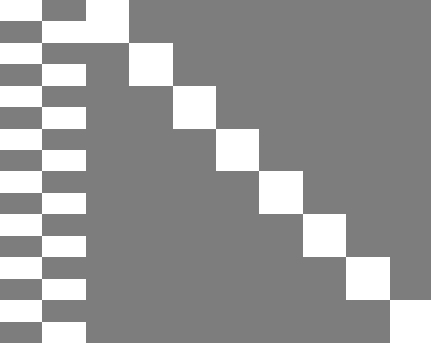 |
|
t-test |
|
|
1 -1 |
|
-1 1 |
|
F-test |
|
|
eye(2)-1/2 |
|
Longitudinal data in two groups (example for two time points) |
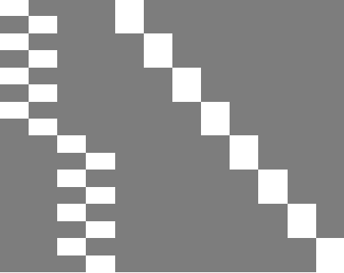 |
|
t-test |
|
|
1 -1 0 0 |
|
0 0 1 -1 |
|
1 -1 1 -1 |
|
1 -1 -1 1 |
|
F-test |
Here n1 and n2 are the number of subjects in Group A and B respectively and k is the number of time points. |
|
eye(k)-1/k |
|
[zeros(k) eye(k)-1/k] |
|
[eye(k)-1/k eye(k)-1/k] |
|
[eye(k)-1/k 1/k-eye(k)] |
|
[ones(1,k)/k -ones(1,k)/k ones(1,n1)/n1 -ones(1,n2)/n2] |
|
[eye(k)-1/k zeros(k); zeros(k) eye(k)-1/k] |
|
Longitudinal data in two groups with interaction of covariate by group (example for two time points) |
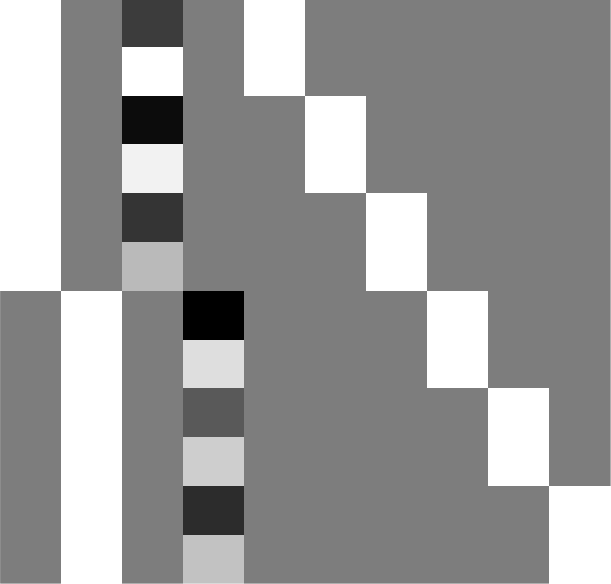 |
|
t-test |
|
|
0 0 1 -1 |
|
0 0 -1 1 |
|
F-test |
|
|
0 0 1 -1 |
|
0 0 1 0 |
Processing of data such as children
BackgroundFor most analyses, CAT provides all necessary tools. Since the new segmentation algorithm is no longer dependent on Tissue Probability Maps (TPMs) and pre-defined Shooting templates for healthy adults exist, most questions can be evaluated using the default Toolbox settings. However, the Toolbox settings may not be optimal for some special cases, such as analysis in children or certain patient groups. Below we present strategies for dealing with these specific cases.
Customized tissue probability maps - overviewFor pediatric MRI data, it is a good idea to create customized TPMs, which reflect age and gender of the population. The TOM8 Toolbox provides the necessary parameters to customize these TPMs.
You can also try the CerebroMatic Toolbox by Marko Wilke that uses a more flexible template creation approach and additionally allows for the creation of customized Dartel or Shooting templates.
Please note that these TPMs should contain 6 classes: GM/WM/CSF and 3 background classes.
Customized tissue probability maps
Within TOM8 Toolbox or CerebroMatic toolbox→ create your own customized TPM based on the respective toolbox's instructions
Implementation into CATCAT → Segment Data
Parameters:
- Options for initial SPM preprocessing
- Tissue Probability Map (→ Select your customized TPMs here)
Customized Dartel or Shooting template
OverviewAn individual (customized) template can be created for all cases involving a representative number of subjects. This means that an average template of the study sample is created from the grey matter and white matter tissue segments of all subjects.
Please note that the use of your own template results in deviations and unreliable results for ROI-based estimations as the atlases are different. Therefore, all ROI outputs in CAT are disabled if you use your own customized template.
Steps to create a customized Dartel template based on your own subjectsSeveral steps are required to create normalized tissue segments with customized templates. These steps can be bundled using dependencies in the Batch Editor. The last step ("Normalise to MNI space") can be repeated with the customized templates if additional output files are required (e.g. you have only saved GM segmentations but are also interested in the WM segmentations or you would like to use a different smoothing size).
In the first step, the T1 images are segmented and the tissue segments are normalized to the Tissue Probability Maps by means of an affine transformation. Start by selecting the module "Segment Data".
CAT → Segment Data
Parameters:
→ for all options except "writing options" use the same settings as you would for a "standard" VBM analysis.
- Writing Options
- "Grey Matter"→ "Modulated normalized" → "No"
- "Grey Matter"→ "DARTEL export" → "affine"
- "White Matter"→ "Modulated normalized" → "No"
- "White Matter"→ "DARTEL export" → "affine"
These settings will generate the volumes "rp1*_affine.nii" and "rp2*_affine.nii", i.e. the grey (rp1) and white (rp2) matter segments after affine registration. The following modules can be selected directly in the batch editor (SPM → Tools → CAT → CAT: Segmentation and SPM → Tools → Dartel Tools → Run Dartel (create Templates)). It makes sense to add and specify these modules together with the "Segment Data" module described above, within the Batch Editor and to set dependencies so that all processing takes place within one batch. To this effect, add the following two steps:
SPM → Tools → Dartel Tools → Run Dartel (create Templates)
Parameters:
Images → select two times "new: Images"- Images: → select the "rp1*_affine.nii" files or create a dependency.
- Images: → select the "rp2*_affine.nii" files or create a dependency.
→ all other options: use defaults or modify as you wish
SPM → Tools → Dartel Tools → Normalise to MNI space
Parameters:
Dartel Template → select the final created template with the ending "_6".- Select according to → "Many Subjects"
- Flow fields: → select the "u_*.nii" files or create a dependency.
- Images: → New: Images → select the "rp1*_affine.nii" files or create a dependency.
- Images: → New: Images → select the "rp2*_affine.nii" files or create a dependency.
- Flow fields: → select the "u_*.nii" files or create a dependency.
- Preserve: → "Preserve Amount"
- Gaussian FWHM: → use defaults or modify as you wish
→ all other options: use defaults or modify as you wish
Please note that a subsequent smoothing is not necessary before statistics if you have used the option "Normalise to MNI space" with a defined Gaussian FWHM.
Alternative approachInstead of creating your own customized Dartel template as described above you can also make use of the customized Dartel templates that are created with the CerebroMatic Toolbox by Marko Wilke.
Initial or re-use of customized Dartel templatesOptionally you can also use either the externally-made or your newly created, customized Dartel templates directly in the CAT Toolbox. This can be helpful if new data is age-wise close to the data used to create the Dartel template (e.g. you have an ongoing study and some more new subjects are added to the sample). In this case, it is not absolutely necessary to always create a new template and you can simply use the previously created Dartel template. Finally, an additional registration to MNI (ICBM) space will usually be applied:
SPM → Tools → Dartel Tools → Population to ICBM Registration
Parameters:
Dartel Template → select the final created template with the ending "_6".SPM → Util → Deformations
Parameters:
Composition → "New: Deformation Field"- Deformation Field: → select the "y_*2mni.nii" file from step above.
- Apply to → select all "Template" files with the ending "_0" to "_6".
- Output destination → Output directory → select directory for saving files.
- Field of View → Image Defined → select final "Template" file with the ending "_6".
- Preserve → Preserve Concentrations (no "modulation").
Finally, your customized Dartel template can also be used as the default Dartel template within CAT:
CAT → Segment Data
Parameters:
- Volumes <-X → Select the original T1 images (as in the first module "Segment Data" described above)
- Extended options for CAT preprocessing → "Spatial Registration Options" → "Spatial Registration Method" → "Dartel Registration" → "Dartel Template" → Select normalized Dartel Template "wTemplate*_1.nii" (expert mode only; the default mode only offers "Spatial Registration" → "Shooting Registration" → "Shooting Template")
For all other options use the same settings as in the first module, or modify as you wish. - Writing Options → select the output files just like in any standard VBM analysis.
Please note that now the output files have to be smoothed as usual with a Gaussian filter before statistical analyses. Also note that ROI outputs will be disabled if you use a customized Dartel template (see above).
Steps to create a customized Shooting template based on your own subjectsThe steps required to create a customized Shooting template are similar to the Dartel template and you can use the first steps from the description above to save the affine registered segmentations for grey and white matter.
SPM → Tools → Shoot Tools → Run Shooting (create Templates)
Parameters:
Images → select two times "new: Images"- Images: → select the "rp1*_affine.nii" files or create a dependency.
- Images: → select the "rp2*_affine.nii" files or create a dependency.
SPM → Tools → Shoot Tools → Write Normalised
Parameters:
Shoot Template → select the final created template with the ending "_4".- Select according to → "Many Subjects"
- Deformation fields: → select the "y_*.nii" files or create a dependency.
- Images: → New: Images → select the "rp1*_affine.nii" files or create a dependency.
- Images: → New: Images → select the "rp2*_affine.nii" files or create a dependency.
- Deformation fields: → select the "y_*.nii" files or create a dependency.
- Preserve: → "Preserve Amount (modulation)"
- Gaussian FWHM: → modify as you wish
→ all other options: use defaults or modify as you wish
Please note that a subsequent smoothing is not necessary before statistics if you have used the option "Write Normalised" with a defined Gaussian FWHM.
Optionally you can also use either the externally-made or your newly created, customized Shooting templates directly in the CAT Toolbox for new data that should be processed with this template.
Other variants of computational morphometry
Deformation-based morphometry (DBM)
BackgroundDBM is based on the application of non-linear registration procedures to spatially normalize one brain to another one. The simplest case of spatial normalization is to correct the orientation and size of the brain. In addition to these global changes, a non-linear normalization is necessary to minimize the remaining regional differences due to local deformations. If this local adaptation is possible, the deformations now provide information about the type and localization of the structural differences between the brains and can then be analysed.
Differences between the two images are minimized and are now coded in the deformations. Finally, a map of local volume changes can be quantified by a mathematical property of these deformations - the Jacobian determinant. This parameter is well known from continuum mechanics and is usually used for the analysis of volume changes in flowing liquids or gases. The Jacobian determinant allows a direct estimation of the percentage change in volume in each voxel and can be analysed statistically (Gaser et al., 2001). This approach is also known as tensor-based morphometry since the Jacobian determinant represents such a tensor.
A deformation-based analysis can be performed not only on the local volume changes, but also on the entire information of the deformations, which also includes the direction and strength of the local deformations (Gaser et al., 1999; Gaser et al., 2001). Since each voxel contains three-dimensional information, a multivariate statistical test is required for analysis. For this type of analysis, a multivariate general linear model or Hotelling's T2 test is often used (Gaser et al., 1999).
Additional Steps in CATCAT → Segment Data
Parameters:
- Writing options → Jacobian determinant → Yes
- To save the estimated volume changes in normalized space (wj_*.nii), modify the writing option for the Jacobian determinant to "yes".
Changes in statistical analysis
Follow the steps for the statistical analysis as described for VBM, select the smoothed Jacobian determinants (e.g. swj_*.nii ) and change the following parameters:
CAT → Statistical Analysis → Basic Models
Parameters:
- Covariates: Don't use TIV as covariate
- Masking
- Threshold Masking → None
- Implicit Mask → Yes
- Explicit Mask → ../spm12/tpm/mask_ICV.nii
Surface-based morphometry (SBM)
BackgroundSurface-based morphometry has several advantages over the sole use of volumetric data. For example, it has been shown that using brain surface meshes for spatial registration increases the accuracy of brain registration compared to volume-based registration (Desai et al., 2005). Brain surface meshes also permit new forms of analyses, such as gyrification indices which measure surface complexity in 3D (Yotter et al., 2011b) or cortical thickness (Dahnke et al., 2013). In addition, inflation or spherical mapping of the cortical surface mesh raises the buried sulci to the surface so that mapped functional activity in these regions can be made easily visible.
The methods used for surface-based processing in CAT (cortical thickness and central surface estimation, spherical mapping, and spherical registration) are described in the Methods section Surface-based processing, and the local adaptive segmentation in Voxel-based processing.
Additional Steps in CATCAT → Segment Data
Parameters:
- Writing options → Surface and thickness estimation → Yes
Use projection-based thickness to estimate cortical thickness and to create the central cortical surface for the left and right hemisphere.
CAT → Resamp. & Smooth Surf. ("Resample and Smooth Surface Data")
Parameters:
- (Left) Surfaces Data <-X → Select the surface data of the left hemisphere (e.g. lh.thickness.*). The right hemisphere is processed automatically.
- Smoothing Filter Size in FWHM [use defaults or modify]
12–15 mm kernels are widely used for SBM and I recommend starting with 12 mm for thickness data and 20–25 mm for folding data (e.g., gyrification, complexity). - Split job into separate processes
To use multi-threading the resampling and smoothing job with multiple subjects can be split into separate processes that run in the background. You can even close MATLAB, which will not affect the processes that will run in the background without GUI. If you do not want to run processes in the background then set this value to 0.
Keep in mind that each process needs about 1.5..2GB of RAM, which should be considered to choose the right number of processes.
Please further note that any dependencies are broken for subsequent modules in the batch.
You can also extract additional surface parameters that need to be resampled and smoothed with the above tool.
CAT → Surface Tools → Extract Additional Surface Parameters
Parameters:
- Central Surfaces <-X → Select the central surface data of the left hemisphere (e.g. lh.central.*). The right hemisphere is processed automatically.
- Gyrification
Extract gyrification based on absolute mean curvature. The method is described in Luders et al., 2006. - Cortical complexity (fractal dimension)
Extract Cortical complexity (fractal dimension) which is described in Yotter et al., 2011b.
Warning: Estimation of cortical complexity is very slow! - Sulcus depth
Extract sulcus depth based on the Euclidean distance between the central surface and its convex hull. In addition, sulcal depth can be transformed with sqrt-function to render the data more normally distributed, which is the recommended option for further statistical analysis.
For statistical analysis of surface measures you can use the common 2nd level models, which are also used for VBM. Follow the steps for the statistical analysis as described for VBM and change the following parameters:
CAT → Statistical Analysis → Basic Models
Parameters:
- Covariates: Don't use TIV as covariate
- Masking
- Threshold Masking → None
- Implicit Mask → Yes
- Explicit Mask → <none>
As input you have to select the resampled and smoothed files (see above). A thickness file of the merged left and right hemispheres that was resampled to the default 32k mesh and smoothed with the default FWHM of 12 mm is named as:
s12.mesh.thickness.resampled_32k.name.gii
where "name" is the original filename without extension. Please note that these files are saved in the surf-folder as default.
Do not use the "Estimate" function in the SPM window, but the corresponding function in CAT. This allows you to automatically overlay the results on the FreeSurfer average surface:
CAT → Statistical Analysis → Estimate (Surface) Models
Region of interest (ROI) analysis
CAT estimates mean tissue volumes and additional surface parameters such as cortical thickness, gyrification or fractal dimension for different volume- and surface-based atlas maps (Gaser et al., 2024). All values are estimated in native space before any spatial normalization: the mean values within a ROI for volume data (e.g. grey matter volume) are given in mL, while surface ROI values represent the mean value of the surface measure (e.g. thickness).
The results for each dataset are stored as XML files in the label directory. The XML file catROI[s]_*.xml contains information of all atlases as data structure for one dataset, and the optional s indicates surface atlases. You can use the CAT function "cat_io_xml" to read the XML data as a structure. If the option "cat.output.ROI" in cat_defaults.m is set to "0", no ROI XML files are saved for volume data, and you have to set this parameter to "1" and preprocess the data again if you are interested in ROI analysis of volume data. If this option is enabled, you can select the different atlases in the batch GUI. The available atlases are described in Atlas maps for ROI analysis.
Additional steps for surface data
ROI values for volume data and for cortical thickness are automatically saved in the label folder during segmentation. For any other surface parameter that was extracted with Extract Additional Surface Parameters (e.g. gyrification, fractal dimension or sulcal depth), the ROI values have to be extracted additionally after preprocessing:
CAT → ROI Tools → Extract ROI-based Surface Values
Parameters:
- (Left) Surface Data Files <-X → Select surface data files such as lh.gyrification.* for all subjects
Statistical analysis of ROI data
The XML files of several subjects can be analysed using an existing SPM design with Analyze ROIs (CAT → Statistical Analysis → ROI Analysis). Here, the SPM.mat file is used to get information about all corresponding label files, but also about your design (including all covariates/confounds you have modelled). In this way, the same statistical analysis saved in the SPM.mat file is applied to your ROI data. You can then select a contrast, a threshold and a measure to analyse (e.g. Vgm, Vwm, thickness, gyrification...) and choose between different atlas maps. The results are printed and saved as thresholded log-p volume or surface maps:
- logPThreshold_NameOfContrast_NameOfAtlas_Measure.nii
- mesh.logPThreshold_NameOfContrast_NameOfAtlas_Measure.gii (left and right hemisphere combined)
These maps can optionally be visualised using Slice Overlay for volume maps or Surface Overlay for surface maps (CAT → View Results).
To analyse different measures (e.g. Vgm/Vwm for volumes or thickness/gyrification for surfaces), you can use any existing volume-based analysis to extract different volume measures, or any existing surface-based analysis to extract different surface measures. For example, an existing SPM.mat file with a VBM analysis of GM allows you to analyse ROI measures for both GM and WM, so it is not necessary to have an SPM.mat file of a VBM analysis of WM. The same applies to surface-based analysis: if you already have an SPM.mat for the analysis of cortical thickness, you can also estimate the ROI analysis for gyrification or fractal dimension, provided that their ROI values were extracted as described above.
For ROI analysis of surfaces you can select the SPM.mat file of the analysis either for the left or right hemisphere or for the merged hemispheres. The design should be the same, and the ROI results are always estimated for both hemispheres.
Please note that if you have moved your data after estimating your original voxel- or surface-based statistics, the required ROI files cannot be found.
Optional extraction of ROI data
Optionally, the XML files of several subjects can be combined and saved as CSV files for further analysis using Estimate Mean Value Inside ROI (CAT → ROI Tools → Estimate Mean Value Inside ROI for External Analysis):
Parameters:
- XML files <-X → Select XML files for each subject that are saved in the label folder.
- Output file → Define output name for csv file. This name is extended by the atlas name and the name of the measure (e.g. "Vgm" for grey matter volume)
For each measure (e.g. "Vgm" for grey matter volume) and each atlas a separate CSV file is written. This works for both volume and surface data, but volume and surface data have to be processed separately with this function (surface-based ROI values are indicated by an additional "s", e.g. "catROIs_"). You can use external software such as Excel or SPSS to import the resulting CSV files for further analysis. Also pay attention to the different interpretations of "." and "," depending on the region and language settings of your system.
Use of atlas maps
You can also use the volume-based atlases provided with CAT as atlas maps with SPM atlas functions. This is particularly useful if you have used the default VBM processing pipeline, since the CAT atlas maps are then in the same Shooting space as your data. In this case, it is strongly recommended to use the CAT atlases rather than the SPM Neuromorphometrics atlas. CAT copies its atlases to SPM automatically when it is started (you can also call cat_install_atlases yourself). All CAT volume atlases can be identified by a leading "CAT_" in the name.
Atlas maps for surfaces can be used with Surface Overlay. Here, the data cursor function allows you to display atlas regions under the cursor. Furthermore, you can use the "Atlas labeling" function to print a list of atlas regions of the resulting clusters or overlay the atlas borders on your rendered surface.
Additional information
Spaces after registration
When preprocessing the images (see First module: Segment Data), the decision on the normalization parameters determines the interpretation of the analysis results. Please note that some of the output options are only available in the expert mode.
"Native space" creates tissue class images in spatial correspondence to the original data. Although this may be useful for estimating global tissue volumes (e.g. GM+WM+CSF=TIV) it is not suitable for performing VBM analyses due to the lack of voxel-wise correspondence in the brain. If one is interested in these global tissue volumes in the native space ("raw values"), it is not necessary to actually output the tissue class images in native space. The "Segment Data"-function automatically generates an XML file for each subject (cat_*.xml), which contains the raw values for GM, WM, and CSF. The subject-specific values can be calculated (i.e., integrated into a single text file) using the function: CAT → Statistical Analysis → Get TIV ("Estimate TIV and global tissue volumes").
"Normalized" creates tissue class images in spatial correspondence to the template in MNI152NLin2009cAsym space. This is useful for VBM analyses (e.g. "concentration" of grey matter; Good et al., 2001).
An excellent overview about the different MNI spaces can be found on the DBS site from Andreas Horn.
"Modulated normalized" creates tissue class images in alignment with the template, but multiplies ("modulates") the voxel values with the Jacobian determinant (i.e., linear and non-linear components) derived from the spatial normalization. This is useful for VBM analyses and allows the comparison of the absolute amount of tissue (e.g. "volume" of grey matter; Good et al., 2001). Please note that in this type of modulation you must use TIV as covariate to correct for different brain sizes. An alternative approach is to use global scaling with TIV if TIV is too strongly correlated with your covariates of interest. For more information, see the section "Checking for Design Orthogonality".
If you use the expert mode, you can optionally choose whether you want to modulate your data for non-linear terms only, which was the default for previous VBM-toolbox versions. This produces tissue class images in alignment with the template, but the voxel values are only multiplied by the non-linear components. This is useful for VBM analyses and allows comparison of the absolute amount of tissue corrected for individual brain sizes. This option is similar to using "Affine+non-linear" (see above) in combination with "global normalization" (when building the statistical model with the traditional PET design later on). Although this type of modulation was used as default in previous VBM-toolbox versions it is no longer recommended as the use of standard modulation in combination with TIV as covariate provides more reliable results (Malone et al., 2015).
Naming convention of output files
Please note that the resulting files of CAT are organized in separate subfolders (e.g. mri, report, surf, label). If you don't want to use subfolders you can change the option "cat.extopts.subfolders" in cat_defaults.m to "0". This option is ignored for data in BIDS layout, where all results are saved without subfolders (by default in "derivatives/CAT26.0_<revision>").
Images (saved in subfolder "mri")
|
Segmented Images: |
[m[0]w]p[0123]*.nii rp[0123]*_rigid.nii, rp[0123]*_affine.nii |
|
Bias, noise and intensity corrected T1 image: |
[w]m*.nii |
|
Jacobian determinant: |
wj_*.nii |
|
Deformation field (inverse field): |
y_*.nii (iy_*.nii) |
|
Image space prefix: |
|
|
m |
modulated |
|
m0 |
modulated non-linear only (expert mode only) |
|
w |
warped (spatially normalized using Dartel/Shooting) |
|
r |
realigned (for longitudinal data only) |
|
r |
registered for DARTEL export (rigid or affine, see image space extension) |
|
Image space extension: |
|
|
_affine |
affine registered only (DARTEL export) |
|
_rigid |
rigid-body registered only (DARTEL export) |
|
Image data prefix: |
|
|
p |
partial volume (PV) segmentation |
|
0 |
PV label |
|
1 |
GM |
|
2 |
WM |
|
3 |
CSF |
Surfaces in native space (saved in subfolder "surf")
SURF.TYPE.*[.gii]
|
SURF |
left, right hemisphere [ lh | rh ] |
|
TYPE |
surface data file [ central | sphere | thickness | gyrification | ... ] |
|
central - coordinates and faces of the central surface |
|
|
sphere - coordinates and faces of the spherical projection of the central surface |
|
|
sphere.reg - coordinates and faces of the sphere after spherical registration |
|
|
thickness - thickness values of the surface pbt - distance measure that is internally used for mapping |
|
|
depth - sulcal depth based on the euclidean distance between the central surface and its convex hull |
|
|
gyrification - gyrification values based on absolute mean curvature |
|
|
fractaldimension - fractal dimension values (cortical complexity) |
Please note that only the surface meshes (e.g. central, sphere, sphere.reg) are saved as GIFTI files (.gii), whereas the surface values (e.g. thickness, depth, gyrification) are saved as data files without extension.
Surfaces in (normalized) template space (after resampling and smoothing; saved in subfolder "surf" by default)
FWHM.SURF.TYPE.RESAMP.*.gii/dat
|
FWHM |
filter size in FWHM after smoothing (e.g. s12) |
|
SURF |
left, right, or both hemispheres [ lh | rh | mesh ] |
|
TYPE |
surface data file [ thickness | gyrification | fractaldimension | ... ] |
|
thickness - thickness values of the surface |
|
|
depth - sulcal depth based on the euclidean distance between the central surface and its convex hull |
|
|
gyrification - gyrification values based on absolute mean curvature |
|
|
fractaldimension - fractal dimension values (cortical complexity) |
|
|
RESAMP |
resampling to 164k (FreeSurfer) or 32k (HCP) mesh [ resampled | resampled_32k ] |
Please note that the resampled surfaces are stored in normalized space as a gifti file and an external dat-file to increase processing speed and minimize the size of the resulting SPM.mat for statistical analysis. Both files are required for each surface dataset.
Images and surfaces of longitudinal data
After processing longitudinal data, the filenames additionally contain an "r" between the original filename and the other prefixes to indicate the additional registration step.
Furthermore, if you select the longitudinal model for detecting larger changes (e.g. ageing effects), the segmented images are additionally indicated by a leading "mw" due to the additional warping and modulation steps. The model for detecting larger changes with brain/head growth (developmental model) writes "mwp1r*" files without this additional prefix.
Example:mwp1r* - grey matter (plasticity or developmental model)
mwmwp1r* - grey matter (ageing model for detecting larger changes)
Reports (saved in subfolder "report")
Global morphometric and image quality measures are stored in the cat_*.xml file. This file also contains other useful information about software versions and options used to preprocess the data. You can use the cat_io_xml function to read data from XML files. In addition, a report for each data set is saved as pdf-file catreport_*.pdf.
Regions of interest (ROI) data (saved in subfolder "label")
ROI data is optionally saved as XML file catROI[s]_*.xml. The optional "s" indicates surface atlases.
CAT user statistics
CAT uses the anonymized IP address (e.g. 192.168.100.xxx) for geolocation and sends information about MATLAB version, CAT version, computer platform, preprocessing runs, and error messages to our SBM server. This is invaluable to us to get statistics about the use of CAT and more importantly about possible errors and helps us to fix them.
You can set the flag "cat.extopts.send_info" in cat_defaults.m to "0" to prevent sending any (anonymized) information to our SBM server. However, keep in mind that we need this information to fix possible errors and to get statistics about MATLAB and CAT versions.
Description of CAT statistics:
- Start: Information about MATLAB version. This data is sent to our SBM server when CAT is started and provides the approximate number of (unique) users (see unique pageviews)
- TotalUsers: Information about computer platform (and whether the standalone version is used). This data is also sent to our SBM server when CAT is started and provides the approximate number of users for each platform.
- CATxx.x (e.g. CAT26.0): Information about CAT version, computer platform, preprocessing runs and unsuccessful preprocessing. This data is sent to our SBM server during preprocessing to obtain information about the use of CAT and possible errors (see pageviews).
Which information is sent?
- Anonymized IP address (e.g. 192.168.100.xxx) is sent to the SBM server for geolocation and to get the number of unique users.
- Information about MATLAB version and computer platform is sent when CAT is started using the following MATLAB commands (for the standalone version "_standalone" is added to the platform):
urlread(sprintf('http://dbm.neuro.uni-jena.de/piwik/piwik.php?idsite=1&rec=1&action_name=%s%s%s','Start','%2F',version('-release')));
urlread(sprintf('http://dbm.neuro.uni-jena.de/piwik/piwik.php?idsite=1&rec=1&action_name=%s%s%s','TotalUsers','%2F',computer)); - Information about CAT version and computer platform is sent each time preprocessing is started (together with the number of datasets if the job is split into separate processes) using the MATLAB command:
urlread(sprintf('http://dbm.neuro.uni-jena.de/piwik/piwik.php?idsite=1&rec=1&action_name=%s%s%s%s%s%s%d',cat_version,'%2F',computer,'%2F','processed','%2F',n_subjects)); - If an error occurs during preprocessing, information about CAT version, revision and GUI mode (default or expert), computer platform (with "_standalone" for the standalone version), MATLAB release, error identifier, error message (file paths are removed) and error stack (names and line numbers of the functions) is sent using the MATLAB command:
urlread(sprintf('http://dbm.neuro.uni-jena.de/piwik/piwik.php?idsite=1&rec=1&action_name=%s/%s/%s/%s/%s/%s/%s/%s',CATrel,computer,'errors',['r' CATver],caterr_id,version('-release'),caterr_message_str,str_err));
Methods
Voxel-based processing
This toolbox is an extension of the segmentation in SPM, but uses a completely different segmentation approach. See also the section CAT processing steps in brief for a short summary of the processing steps and their order.
We also use two noise reduction methods to make data processing, and the tissue segmentation in particular, more robust against noise. The first method is a spatial-adaptive Non-Local Means (SANLM) denoising filter and removes noise while maintaining edges (Manjon et al., 2010) and is implemented as a preprocessing step. The second method is a classical Markov Random Field (MRF) approach, which includes spatial information from adjacent voxels in the segmentation estimation (Rajapakse et al., 1997) and is part of the AMAP segmentation. The strength of the filters is automatically determined by estimating the residual noise in the image or can be set manually.
InterpolationCAT uses an internal interpolation to provide more reliable results even with low resolution images and anisotropic spatial resolutions. Although interpolation cannot add more details to the images, some of the functions used benefit from the higher number of voxels and the usual stripe artefacts in modulated images are greatly reduced.
Affine Preprocessing (APP)To improve the initial SPM segmentation, an initial affine registration is applied to a bias-corrected image and the intensity range is limited to avoid problems in special protocols. If the preprocessing fails a more aggressive version is available that applies a rough bias correction and removes non-brain parts of the image before the initial affine registration.
Local Adaptive Segmentation (LAS)GM intensity can vary for different regions such as the motor cortex, the basal ganglia, or the occipital lobe. These changes have an anatomical background (e.g. iron content, myelination), but are dependent on the MR-protocol and often lead to GM-underestimations at higher intensities and CSF-overestimations at lower intensities. Therefore, a local intensity transformation of all tissue classes is used to reduce these effects in the image before the final AMAP segmentation. In addition to our adaptive MAP approach for partial volume segmentation, this approach allows us to adapt local intensity changes to deal with varying tissue contrasts (Dahnke et al., 2012). The strength of the changes is controlled by the LASstr parameter, with 0 for no LAS, small values (0.01-0.5) for small adjustments, 0.5 for medium adjustments (default), and higher values (0.5-1) for strong adjustments.
AMAP SegmentationThe segmentation approach is based on an Adaptive Maximum A Posteriori (AMAP) technique without the need for a priori information on the tissue probabilities. This means that the Tissue Probability Maps (TPM) are not constantly used in the sense of the classical Unified Segmentation approach (Ashburner and Friston, 2005), but only for spatial normalization, initial skull-stripping, and as initial segmentation estimate. The subsequent AMAP estimation is adaptive in the sense that local variations of the parameters (i.e., means and variance) are modelled as slowly varying spatial functions (Rajapakse et al., 1997). This accounts not only for intensity inhomogeneities, but also for other local intensity variations.
Partial Volume SegmentationIn addition, the segmentation approach uses a Partial Volume Estimation (PVE) with a simplified mixed model of a maximum of two tissue types (Tohka et al., 2004). We begin with an initial segmentation into three pure classes: grey matter (GM), white matter (WM), and cerebrospinal fluid (CSF) based on the AMAP estimation described above. The initial segmentation is followed by a PVE consisting of two additional mixed classes: GM-WM and GM-CSF. This results in an estimate of the amount (or fraction) of each pure tissue type that is present in each voxel (since single voxels - given their size - probably contain more than one tissue type) and thus allows for more precise segmentation.
Skull-StrippingCAT provides different approaches for skull-stripping. Currently, the method with the most accurate and reliable results is an adaptive probability region-growing (APRG) method. It refines the probability maps of the SPM approach by region-growing techniques of the GCUT approach with a final surface-based optimization strategy.
The SPM approach also works quite stably for the majority of data. However, in some rare cases parts of GM (i.e. in the frontal lobe) might be cut. If this happens the GCUT approach is a good alternative. GCUT is a graph-cut/region-growing approach starting from the WM area.
If your segmentations still contain skull and other non-brain tissue (e.g. dura) using the GCUT approach you can try to increase the strength in expert mode. The strength is defined with 0 for a more liberal and wider brain mask and 1 for a more aggressive skull-stripping. The default setting is 0.5 and has been successfully tested on a variety of different images. Thus, if parts of the brain are missing in the segmentations, the strength can be decreased.
ParcellationAfter skull-stripping, the brain is parcellated into the left and right hemisphere, subcortical areas, and the cerebellum.
CleanupCAT includes a new cleanup routine that uses morphological, distance and smoothing operations to remove the remaining meninges after the final segmentation. The strength of the cleanup is controlled by the cleanupstr parameter, with 0 for no cleanup, low values <0.5 for light cleanup, 0.5 for medium cleanup (default), and 1 for strong cleanup.
Spatial NormalizationAnother important extension of the SPM segmentation is the integration of the Geodesic Shooting (Ashburner and Friston, 2011) or the older Dartel (Ashburner, 2007) normalization into the toolbox by already existing Dartel and Geodesic Shooting templates in MNI space.
These templates were derived from 555 healthy control subjects of the IXI-database and are available in the MNI space for six different iteration steps of the Dartel and five different iteration steps of the Geodesic Shooting normalization.
Therefore, the creation of sample-specific Dartel and Geodesic Shooting templates is no longer necessary for most studies.
An excellent overview about the different MNI spaces can be found on the DBS site from Andreas Horn.
The accurate detection of White Matter Hyperintensities (WMHs) is crucial to prevent registration errors, such as the inappropriate mapping of WMHs to typical grey matter locations. Additionally, WMHs in close proximity to the cortex can lead to surface reconstruction and cortical thickness estimation issues by being misinterpreted as grey matter.
To address this issue, CAT initially employs a low-resolution shooting registration technique (Ashburner and Friston, 2011) on the preliminary SPM segments to align the tissue probability map and the CAT atlas with the individual image space. Subsequently, local tissue and region corrections are conducted using region-growing and bottleneck algorithms (Mangin et al., 1996; Dahnke et al., 2013).
Within the individual segmentation map, isolated GM islands within the white matter (WM) and voxels adjacent to the lateral ventricles that have high WM probability but GM-like intensity are classified as WMHs. These areas with GM-like intensity but a WMH label are either temporarily aligned with WM or treated as a separate tissue class, depending on the WMH correction (WMHC) processing parameters.
To mitigate improper deformations during spatial registration in brains with stroke lesions, the CAT toolbox offers a Stroke Lesion Correction (SLC) method. This feature suppresses strong (high-frequency) deformations during the Shooting registration step, which can occur due to the presence of lesions. To utilize this method, the lesions must be set to zero. This can be achieved by employing the Manual image (lesion) masking, where a lesion mask can be created. Subsequently, the SLC flag should be enabled in the expert mode of CAT. This ensures that the regions containing lesions are excluded from the spatial registration, preventing large deformations that might otherwise arise when aligning the lesioned brain with a template brain.
By implementing this correction, CAT facilitates more accurate spatial alignment, particularly for clinical data involving stroke patients. This approach is essential for neuroimaging studies where precise brain structure alignment is crucial for subsequent analysis.
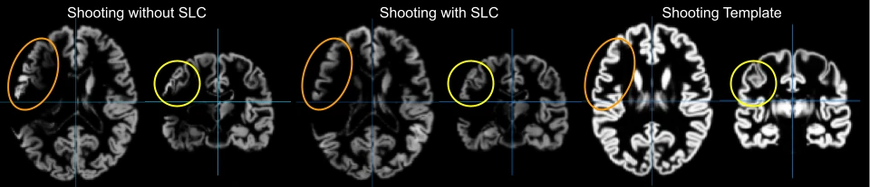
Surface-based processing
CAT also includes the estimation of the cortical thickness and central surface of the left and right hemispheres based on the projection-based thickness (PBT) method (Dahnke et al., 2013). Furthermore, the surface pipeline uses spherical mapping (Yotter et al., 2011c) and estimation of local surface complexity (Yotter et al., 2011b) and local gyrification (Luders et al., 2006).
Cortical thickness and central surface estimationWe use a fully automated method that allows the measurement of cortical thickness and reconstruction of the central surface in one step. It uses a tissue segmentation to estimate the white matter (WM) distance and then projects the local maxima (which are equal to the cortical thickness) onto other grey matter voxels using a neighbouring relationship described by the WM distance. This projection-based thickness (PBT) allows the handling of partial volume information, sulcal blurring, and sulcal asymmetries without explicit sulcus reconstruction (Dahnke et al., 2013). The initial surface reconstruction uses an improved Marching Cubes approach that directly produces surfaces without topological defects (holes and handles that prevent the surface from being homeomorphic with a sphere), whereas earlier versions repaired these defects afterwards using spherical harmonics (Yotter et al., 2011a). This is followed by a surface refinement, which results in the final central surface mesh. This mesh provides the basis to extract folding patterns (i.e., based on the position of mesh nodes relative to each other), where the resulting local values (e.g., absolute mean curvature) are projected onto each node.
Spherical MappingA spherical map of a cortical surface is usually necessary to reparameterize the surface mesh into a common coordinate system to enable inter-subject analysis. We use a fast algorithm to reduce area distortion, which leads to an improved reparameterization of the cortical surface mesh (Yotter et al., 2011c).
Spherical RegistrationSubsequently, the individual central surfaces are spatially registered to the FreeSurfer "FsAverage" template using this spherical mapping with minimal distortions. We have adapted the volume-based diffeomorphic Dartel algorithm to the surface (Ashburner, 2007) to work with spherical maps (Yotter et al., 2011d). We apply a multi-grid approach that uses reparameterized values of sulcal depth and shape index defined on the sphere to estimate a flow field that allows the deformation of a spherical grid. Since CAT26, the default surface pipeline uses a Spherical Demons registration (Yeo et al., 2010) instead, and the Dartel-based approach is only used by the older surface pipelines that can be selected in expert mode.
Resampling and SmoothingIn the last step, the local thickness values are transferred onto the FreeSurfer "FsAverage" template. This step is not part of the segmentation but is performed with Resample and Smooth Surface Data, which can also be used to transfer measurements of cortical folding (e.g., gyrification) as well as other measurements or data (e.g., functional or quantitative MRI) to the FreeSurfer "FsAverage" template. Note that the spatial registration of cortical measurements is combined with a spatial smoothing step in CAT to prepare the data for statistical analysis.
Further Surface MeasuresBesides cortical thickness, further measures of brain folding and data mapping are available after surface reconstruction in the 'Surface Tools' menu. The Extract Additional Surface Parameters batch allows estimation of the local surface area, the folding measure by the absolute mean curvature (Gyrification) (Luders et al., 2006), the depth of sulci or the measurement of local surface complexity by the fractal dimension (Yotter et al., 2011b). Moreover, 3D volume data (e.g. fMRI data) can be mapped to the individual surface to benefit from enhanced surface-based smoothing and registration. The mapping can be applied to volumes from the same native space, e.g., for cortical myelination measures, or nonlinear co-registered volumes, such as fMRI images. This mapping can also be applied to normalized volumes without individual surfaces to map results in MNI space to the template surface.
Atlas maps for ROI analysis
CAT provides different volume- and surface-based atlas maps for ROI analysis. How ROI values are estimated, stored and analysed is described in Region of interest (ROI) analysis. The available atlases are listed below.
- List of volume-based atlas maps (located in templates_MNI152NLin2009cAsym)
- List of FreeSurfer surface-based atlas maps (located in atlases_surfaces or atlases_surfaces_32k)
List of volume-based atlas maps in CAT
We prepared different atlas maps for the MNI152NLin2009cAsym space that are stored in the templates_MNI152NLin2009cAsym directory.
For each atlas you can find a CSV file with the ROI IDs, short and full names.
The txt-file contains further information, terms of use, and the name of the original publications and websites.
If original T1 maps and subject label maps were available we used CAT to preprocess the data and map them to common space.
The subject dependent labels were translated to the CAT name system.
An excellent overview about the different MNI spaces can be found on the DBS site from Andreas Horn.
Display the Neuromorphometrics, LPBA40 and Hammers atlas maps.
Neuromorphometrics
Maximum probability tissue labels derived from the "MICCAI 2012 Grand Challenge and Workshop on Multi-Atlas Labeling" (Details). These data were released under the Creative Commons Attribution-NonCommercial (CC BY-NC) with no end date. Users should credit the MRI scans as originating from the OASIS project and the labeled data as "provided by Neuromorphometrics, Inc. Neuromorphometrics.com under academic subscription".
Display Neuromorphometrics atlas as volume map.
You can find more information about this atlas here.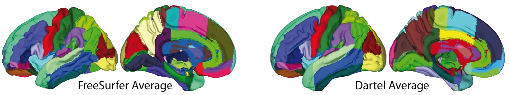
LPBA40
The LONI Probabilistic Brain Atlas (LPBA40) is a series of maps of brain anatomic regions (Shattuck et al., 2008). These maps were produced from a set of whole-head MRI of 40 human volunteers. Each MRI was manually delineated to identify a set of 56 structures in the brain, most of which are within the cortex. These delineations were then transformed into a common atlas space to produce a set of coregistered anatomical labels. The original MRI data were also transformed into the atlas space.
Display LPBA40 atlas as volume map.
You can find more information about this atlas here.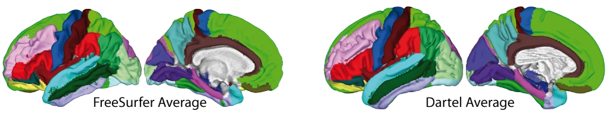
Hammers
This atlas is based on Alexander Hammers' brain atlas based on 30 subjects, made available for the Euripides project, Nov 2009 (Hammers et al., 2003; Gousias et al., 2008, Faillenot et al., 2017).
Display Hammers atlas as volume map.
You can find more information about this atlas here.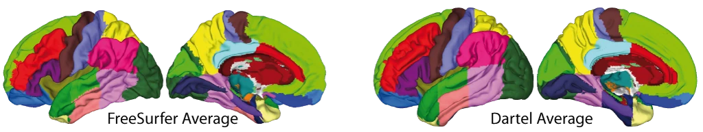
Cobra
The Cobra atlas is built from 5 atlases that are provided by the Computational Brain Anatomy Laboratory at the Douglas Institute (CoBra Lab). The 5 atlases are based on high-resolution (0.3mm isotropic voxel size) images of the amygdala, hippocampus (subfields and extra-hippocampal white matter), subcortical structures and the cerebellum. Please note that the original labels were changed in order to allow a combined atlas.
Display the Cobra atlas as volume map.
You can find more information about this atlas here.IBSR
18 subjects of the IBSR V2 dataset, with low quality T1 data, but good label maps.
Display IBSR atlas as volume map.
You can find more information about this atlas here.Mori
This atlas is based on the "Slicer3:Mori_Atlas_labels_JHU-MNI_SS_Type-II" atlas of Version 2010-05 by Oishi et al., 2009.
Display Mori atlas as volume map.
You can find more information about this atlas here.Thalamus
This atlas is based on the atlas of human thalamic nuclei by Najdenovska et al., 2018.
Display Thalamus atlas as volume map.
You can find more information about this atlas here.Thalamic Nuclei
This atlas is based on the atlas of human thalamic nuclei by Saranathan et al., 2021.
Display Thalamic nuclei atlas as volume map.
You can find more information about this atlas here.Hypothalamus
This atlas is based on the high-resolution in vivo atlas of the human hypothalamic region by Neudorfer et al., 2020 with 13 hypothalamic and 12 extrahypothalamic grey and white matter structures.
Display Hypothalamus atlas as volume map.
You can find more information about this atlas here.AAL (Automated Anatomical Labeling) version 3
Parcellation aligned on Collins brain (Collins et al., 1998; Tzourio-Mazoyer et al., 2002; Rolls et al., 2020).
Display AAL3 atlas as volume map.
You can find more information about this atlas here.Anatomy version 3
This atlas is based on probabilistic cytoarchitectonic maps and functional imaging data by Eickhoff et al., 2005.
Display Anatomy atlas as volume map.
You can find more information about this atlas here.JulichBrain
This atlas is based on the whole-brain parcellation of the Julich-Brain Cytoarchitectonic Atlas (v3.1) by Amunts et al., 2020. The atlas contains 207 areas per hemisphere.
Display JulichBrain atlas as volume map.
You can find more information about this atlas here.Local-Global Intrinsic Functional Connectivity Parcellation
These atlases by Schaefer et al., 2018 are available for different numbers of parcellations (100, 200, 400, 600) and are based on resting state data from 1489 subjects.
Display the Schaefer atlas with 200 parcellations and 17 networks as volume map.
You can find more information about this atlas here.Atlas of the human cerebellum
This atlas by Diedrichsen et al., 2009 is based on the atlas of the human cerebellum.
Display the SUIT atlas as volume map.
You can find more information about this atlas here.Melbourne Subcortex Atlas
This atlas by Tian et al., 2020 is based on the hierarchical MRI atlas of the human subcortex.
Display the Melbourne Subcortex Atlas as volume map.
You can find more information about this atlas here.List of surface-based atlas maps (FreeSurfer)
We also prepared different surface atlas maps for the FreeSurfer and HCP (32k) spaces that are stored in the atlases_surfaces(_32k) directories. You can find more information about the atlases in atlases_surfaces.man.
See FreeSurfer WIKI for further information.
Desikan-Killiany (DK40) Atlas
This gyrus-based atlas (Desikan et al., 2006) defines each region from the depth of one sulcus to the depth of the next. This means each gyral region includes both the outer visible surface and the adjacent sulcal walls.
Display DK40 atlas on FreeSurfer average surface ( left, right, both sides ), or Shooting average surface ( left, right, both sides ).
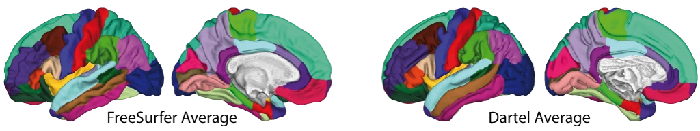
Destrieux Atlas (2009)
This atlas (Destrieux et al., 2010) separates gyri and sulci based on surface curvature. Gyral regions include only the outer convex surface, while the sulcal walls are labeled as separate sulcal regions.
Display Destrieux atlas on FreeSurfer average surface ( left, right, both sides ), or Shooting average surface ( left, right, both sides ).
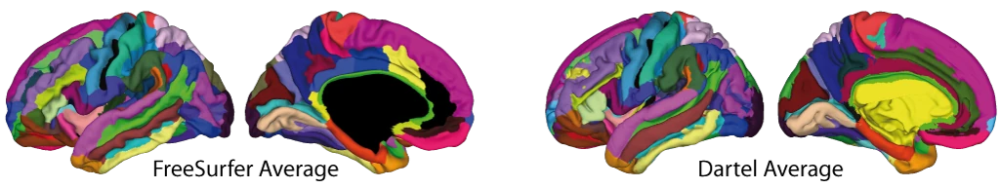
Human Connectome Project (HCP) Multi-Modal Parcellation
This atlas is based on delineations based on cortical architecture, function, connectivity, and/or topography in a group of 210 healthy young adults by Glasser et al., 2016.
Display HCP atlas on FreeSurfer average surface ( left, right, both sides ), or Shooting average surface ( left, right, both sides ).
JulichBrain
This atlas is based on the whole-brain parcellation of the Julich-Brain Cytoarchitectonic Atlas (v3.1) by Amunts et al., 2020 The atlas contains 146 cortical areas per hemisphere..
Display JulichBrain atlas on FreeSurfer average surface ( left, right, both sides ), or Shooting average surface ( left, right, both sides ).
Local-Global Intrinsic Functional Connectivity Parcellation
These atlases by Schaefer et al., 2018 are available for different numbers of parcellations (100, 200, 400, 600) and are based on resting state data from 1489 subjects.
Display the Schaefer atlas with 200 parcellations and 17 networks on FreeSurfer average surface ( left, right, both sides ), or Shooting average surface ( left, right, both sides ).
CAT report and quality control
CAT now also prints image quality measurements (Dahnke et al., 2025) and major global subject-specific measures in addition to the used preprocessing parameters. These data are further saved in the "cat_*.xml" files for each subject that can be read by cat_io_xml.
Image quality measures
Due to the wide range of rating and marking systems, the rating was defined for a percentage range and a numerical scaling that allows mapping to nominal numbers or letters with chromatic variants ("+" and "-") shown in Figure 7. The obtained quality ratings range from 0.5 (100 rating points (rps)) to 10.5 (0 rps) with values around 1 and 2 describing (very) good image quality (grade A and B) and values around 5 (grade E) and higher (grade F, < 50 rps) indicating problematic images. The scaling of the QMs was performed on the basis of theoretical aspects and the analysis of synthetic and real MRI data, especially the BWP (Brain Web Phantom; Collins et al., 1998). The CAT report gives each rating in rating points (in percent) together with the corresponding grade.

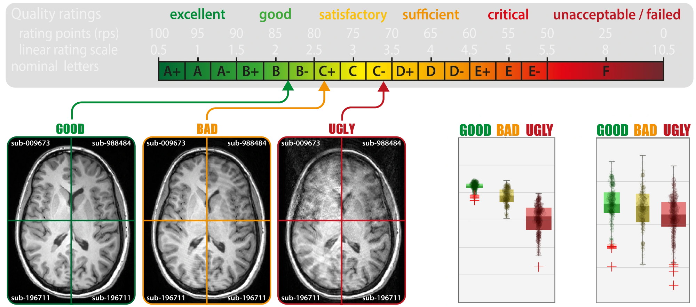
The image quality measures describe the properties of the image before CAT processing. They were estimated by using the tissue segmentation and were (nearly) independent of subject sex and health status.
-
NCR (Noise Contrast Ratio):
The NCR measures the local standard deviation in the optimized WM segment and is scaled by the minimum tissue contrast.
-
ICR (Inhomogeneity Contrast Ratio):
The ICR is measured as the global standard deviation within the optimized WM segment and is scaled by the minimum tissue contrast.
-
RES (RMS resolution):
To describe the resolution of an image, the RMS value of the voxel size is used. Outliers with exceptionally low resolutions in one of the x y z dimensions are weighted much more strongly than outliers with high resolutions, resulting in an asymmetric penalization.
-
ECR (Edge Contrast Ratio):
The ECR measures the normalized intensity gradient at the boundary between GM and WM and describes the effective structural resolution of the image independent of its voxel size. Blurred images therefore get worse ratings.
-
FEC (Fast Euler Characteristic):
The FEC measures the Euler characteristic of the WM surface that is quickly reconstructed from the intensity-normalized image at a reduced resolution of 2 mm. Deviations from the Euler characteristic of a sphere indicate topology defects (handles and holes), which are mainly caused by noise and other image artifacts (e.g. motion). The FEC is normalized by the surface area.
The ratings of NCR, RES, ECR and FEC are combined into the structural image quality rating SIQR (Dahnke et al., 2025), which is shown as weighted average in the CAT report. SIQR is the power mean (with an exponent of 4) of these ratings and therefore gives poor ratings more weight than the arithmetic mean. The ICR is not included, because it is only weakly related to the preprocessing quality and would, for example, rate high-field data worse. SIQR replaces the image quality rating IQR of CAT12.9 and earlier versions, which combined only NCR and RES, and both ratings are not directly comparable. The SIQR of several subjects can be extracted from the XML files using Get Weighted Overall Image Quality. Tests of different databases such as ADNI, IXI, INDI, OASIS, PPMI etc. demonstrated that published data got good quality ratings in general. Please note that an excellent rating is defined for extraordinarily good images that can be achieved by averaging several ultra high resolution scans on high field systems (e.g. Winterburn et al., 2013), and that typical scientific (clinical) data is expected to get just good to satisfactory ratings.
Low image quality can lead to underestimation of the GM in most preprocessing pipelines (Reuter et al., 2015; Dahnke et al., 2025). Figure 7 shows example scans of good, bad and ugly quality and how their SIQR and relative GM volume (rGMV) differ.
FAQ
Installation and platforms
How can I run CAT on an HPC system?
On the HPC I would prefer to call CAT from the shell without display. Here you can either use the standalone version of CAT (without the need for a MATLAB license) or the standard version.The ENIGMA-CAT protocol describes the available steps. You can decide with two flags (-ns, -e) whether you call the standalone or standard version.
Standalone version:
/software/cat_standalone/standalone/cat_standalone.sh -m /software/MATLAB_Runtime/R2023b \
-b /software/cat_standalone/standalone/cat_standalone_segment_enigma.m \
/data/enigma-data/raw/sub*.nii.gz
Standard version:
your_spm_folder/toolbox/CAT/standalone/cat_standalone.sh -ns -e -m /usr/local/bin/matlab \
-b your_spm_folder/toolbox/CAT/standalone/cat_standalone_segment_enigma.m \
-s your_spm_folder /data/enigma-data/raw/sub*.nii.gz
I have processed my data on different platforms and obtain slightly different results if I calculate the differences between the GM segmentations for the same data set.
Unfortunately this can happen and has been investigated in this paper for the FreeSurfer software. The authors also found different results for different OS X versions, probably due to the use of different software libraries. Personally, I haven't investigated the effect of different OS X versions, but I can confirm that different MATLAB versions and operating systems will cause deviations using CAT. However, the effect on the resulting statistical analysis is rather subtle. Some clusters change slightly in size, and even if some local values are changed the overall difference is quite small and will not affect your statistical results too much.Preprocessing and quality control
The old "Check Sample Homogeneity" tool was quite useful for finding duplicate subjects in large samples. The new homogeneity tool, which uses Z-score, no longer supports this. What is the difference between these measures?
Both homogeneity measures differ in their calculations and it’s difficult to say which is a better and more suitable measure. I prefer the new z-score measure over correlation since it’s quicker to estimate for larger samples and aligns with the idea that outliers are often identified by the sample standard deviation. The z-score is computed as the difference between the sample mean and the voxel value, divided by the standard deviation, and averaged across all voxels.Furthermore, newer CAT versions use the quartic mean Z-score, which gives outliers a greater weight and makes them more obvious in the plot. However, the old tool is still available here.
I see that some dura are classified as GM in some of the subjects. Would you recommend trying some of the other skull stripping options or doing some manual edits? This is happening in a few subjects.
Some MR sequences show more difficulty in skull-stripping and my personal experience is that changing the skull-stripping approach in CAT does not really help much. However, you can try the older gcut method or the SPM approach in CAT. Usually the remaining non-brain areas lead to higher local variance. Therefore, it is less likely to find effects in these areas, which is probably not a problem.I would like to use CAT for VBM/SBM analyses with my stroke patients. I have lesion masks (manually traced on T2w images) but I am wondering how to mask out the lesion in CAT preprocessing?
CAT can now deal with lesions that have to be set to zero in your image using the Stroke Lesion Correction (SLC) in expert mode. These lesion areas are not used for segmentation or spatial registration, thus these preprocessing steps should be almost unaffected. If you have created masks you can apply these masks using the Lesion masking tool in CAT.Is there any plan to extend the current CAT segmentation based only on T1w images to include FLAIR or T2 images?
No, there are no plans to include T2 or FLAIR in CAT in the near future. However, I would try to see if your additional T2 or FLAIR really helps to get a more accurate segmentation. While skull-stripping will definitely benefit from multi-channel segmentation, segmentation between GM and WM will often lead to less accurate results due to the lower contrast-to-noise ratio of T2 or FLAIR sequences.If you are trying to use FLAIR images to detect white matter hyperintensities (WMHs), you can try the LST toolbox. Here you can detect and fill the lesions to obtain a corrected T1 image.
I have done the VBM processing with the CAT pipeline (as explained in the manual) and with the classical SPM Dartel pipeline as explained in the John Ashburner tutorial. The results of these two pipelines give me a different result.
There are many differences in the preprocessing approaches between SPM and CAT, and as is often the case, different methods give different results (even between CAT versions there are differences in the results). In CAT I also apply noise reduction, local adaptive segmentation and other methods that can affect the results. The only advice I can give is to choose the approach that best fits your hypothesis. It might also help to lower the thresholds to see the differences more clearly.How is the detection of white matter hyperintensities (WMHs) working in CAT?
Detecting White Matter Hyperintensities (WMHs) is crucial to avoid registration errors, such as attempting to move WMHs to typical GM locations, and surface reconstruction problems, such as misinterpreting WMHs as fuzzy cortical sulci (Dahnke et al., 2019).CAT first applies an optimized low-resolution shooting registration technique (Ashburner and Friston, 2011) on the initial SPM segments to map the tissue probability map (TPM) and the CAT atlas to the individual space. Fine local correction of tissues and regions is then performed using region-growing and bottle-neck algorithms (Mangin et al., 1996; Dahnke et al., 2013). In the individual atlas map, isolated grey matter (GM) islands within the white matter (WM) and voxels surrounding the lateral ventricles with high WM probability but GM-like intensity are referred to as WM hyperintensities (WMHs).
The final segmentation of the prepared T1 image with uncorrected WMHs uses an AMAP approach (Rajapakse et al., 1997) with a partial volume estimation (PVE) model (Tohka et al., 2004). Voxels with GM intensity but a WMH label are either temporarily aligned to the WM or treated as a separate tissue class, depending on the WMHC processing parameters.
Statistical analysis
Can we use CAT for white matter volume analysis?
Of course, CAT can examine white matter (WM). However, keep in mind that there are more sensitive methods for WM, such as DTI, and the sensitivity for WM may be lower compared to grey matter. This is because white matter regions are often quite homogeneous in T1-weighted images, making it more difficult to find differences.However, if you do find something, all is fine, but if you do not, it may simply be due to the lower sensitivity.
Which of the morphological measures (grey matter or cortical thickness) is the best to assess atrophy/neurodegeneration in Alzheimer's disease?
Cortical thickness is the better biological measure of Alzheimer's disease, while grey matter volume is more sensitive. This is because surface reconstruction is more susceptible to image quality problems and thickness is estimated in the sub-millimeter range, whereas images have a spatial resolution of about 1 mm. In Alzheimer's disease, however, atrophy is quite pronounced, so cortical thickness is also a reliable indicator of these effects. Grey matter volume, on the other hand, has the advantage of providing additional measurements in the hippocampus and amygdala, which are key structures in Alzheimer's disease. I would definitely try both and decide based on the results.Can I convert my T-maps to effect size maps?
You can use the Transform and Threshold SPM-maps function to do this. Note, however, that the conversion to Cohen's d is only useful for 2-sample t-tests and the conversion to correlation coefficient is only useful for linear regression. The same applies to the conversion to R2 for F maps.I am using the TFCE toolbox to correct a cortical thickness analysis done with CAT. Unexpectedly, my results after TFCE using a correction are extremely large at p<0.05 FWE compared to uncorrected results at p<0.001 and I am wondering if something might be wrong.
In rare cases, such a strong difference may be seen, especially for surface analysis. You may have a large and distributed effect that is significant at p<0.05 or 0.01 uncorrected. This large cluster is simply emphasised by its size by the TFCE approach. I would therefore recommend that you check your results for the parametric SPM test using a more liberal threshold and see if this is similar to the pattern you get with the TFCE.Surface-based analysis
Can I overlay more than one result on the surface?
Use the following command to allow RGB overlay of up to 3 results: cat_surf_results('rgb',spm_select([1 3],'mesh'));Please note that the surface maps should be thresholded (i.e. using Transform and Threshold SPM-maps)
I have doubts about controlling for TIV in surface analysis. I read in the CAT manual that TIV should not be added as a covariate, but I couldn't find the reason why. I have observed small but significant effects of TIV on surface measures of certain ROIs, and have also seen some papers using TIV as a covariate in cortical thickness and gyrification analyses. Is it methodologically wrong to include TIV as a covariate in SBM using CAT?
Usually cortical thickness is quite robust to changes in TIV, so it's not necessary to control for it. However, there may be data where this will additionally remove variance from your data that is related to brain size, and there is no clear rule that it should not be included. Therefore, you can optionally use TIV as a nuisance parameter to help remove variance that is not related to your parameter of interest in your data.Is there a workflow to use the resampled surfaces for permutation analyses in FSL randomise or PALM?
Randomise will not work with surfaces, but PALM does support gifti files. So the resampled files should work with PALM. However, if you are an SPM user, the TFCE toolbox may be easier to use as you can use your existing SPM design. The TFCE toolbox supports threshold free cluster enhancement and is seamlessly integrated with CAT.Why is such large smoothing recommended for analysis of fractal dimension or gyrification?
Gaussian smoothing can be thought of as a weighted sum (average) of surrounding neighbours. The spatial scale of folding measures, such as gyrification or fractal dimension, is only meaningful when considering an area that spans the distance between a gyrus and a sulcus. Thus, Gaussian smoothing is the correct way to account for the spatial scale of folding measures, and this is also the reason why the recommended smoothing size is larger compared to thickness measures.ROIs and atlases
Is there a way to extract ROI data using a different atlas to the one used during preprocessing?
For volume atlases, the ROI values are estimated during preprocessing and you have to select the atlas before processing the data. However, if the native segmentations and the deformation fields were saved, you can use Summarise 3D/4D Data Within a ROI to estimate ROI values for any other atlas.For surface data, ROI values can be extracted after preprocessing for any surface atlas using Extract ROI-based Surface Values.
If I use atlas ROI tools in CAT there are two different Neuromorphometric atlases listed. Which one should I use?
SPM provides the Neuromorphometric atlas in the MNI space that is used in SPM. Please take care that you always use the atlases that are in CAT MNI152NLin2009cAsym space. These are indicated by a leading "CAT_" in the name.What are the units of the ROI values that are extracted in the csv file?
These are the mean volumes (separate for GM/WM) derived in native space and are defined in mL.Citing CAT
If you use CAT, please cite the following references in your work:
CAT (in General)
Gaser C, Dahnke R, Thompson PM, Kurth F, Luders E, Alzheimer's Disease Neuroimaging Initiative (2024). CAT: a computational anatomy toolbox for the analysis of structural MRI data. GigaScience 13:giae049.
Surface Estimation
Dahnke R, Yotter RA, Gaser C (2013). Cortical thickness and central surface estimation. NeuroImage 65:336-348.
Yotter RA, Dahnke R, Thompson PM, Gaser C (2011). Topological correction of brain surface meshes using spherical harmonics. Human Brain Mapping 32(7):1109-1124.
Cortical Gyrification
Luders E, Thompson PM, Narr KL, Toga AW, Jancke L, Gaser C (2006). A curvature-based approach to estimate local gyrification on the cortical surface. NeuroImage 29(4):1224-1230.
Cortical Complexity (Fractal Dimension)
Yotter RA, Nenadic I, Ziegler G, Thompson PM, Gaser C (2011). Local cortical surface complexity maps from spherical harmonic reconstructions. NeuroImage 56(3):961-973.
Grey Matter Asymmetry
Kurth F, Gaser C, Luders E (2015). A 12-step user guide for analyzing voxel-wise gray matter asymmetries in statistical parametric mapping (SPM). Nature Protocols 10(2):293-304.
Automated Anatomical Labeling Atlas (AAL)
Tzourio-Mazoyer N, Landeau B, Papathanassiou D, Crivello F, Etard O, Delcroix N, et al. (2002). Automated anatomical labelling of activations in SPM using a macroscopic anatomical parcellation of the MNI MRI single subject brain. NeuroImage 15:273-289.
Rolls ET, Huang C, Lin C, Feng J, Joliot M (2020). Automated anatomical labelling atlas 3. NeuroImage 206:116189.
Thalamus Atlas
Najdenovska E, Alemán-Gómez Y, Battistella G, Descoteaux M, Hagmann P, Jacquemont S, Maeder P, Thiran JP, Fornari E, Bach Cuadra M (2018). In-vivo probabilistic atlas of human thalamic nuclei based on diffusion-weighted magnetic resonance imaging. Scientific Data 5:180270.
Thalamic Nuclei Atlas
Saranathan M, Iglehart C, Monti M, Tourdias T, Rutt B (2021). In vivo high-resolution structural MRI-based atlas of human thalamic nuclei. Scientific Data 8(1):275.
Hypothalamus Atlas
Neudorfer C, Germann J, Elias GJB, Gramer R, Boutet A, Lozano AM (2020). A high-resolution in vivo magnetic resonance imaging atlas of the human hypothalamic region. Scientific Data 7(1):305.
Hammers Atlas
Hammers A, Allom R, Koepp MJ, Free SL, Myers R, Lemieux L, Mitchell TN, Brooks DJ, Duncan JS (2003). Three-dimensional maximum probability atlas of the human brain, with particular reference to the temporal lobe. Human Brain Mapping 19(4):224-247.
Gousias IS, Rueckert D, Heckemann RA, Dyet LE, Boardman JP, Edwards AD, Hammers A (2008). Automatic segmentation of brain MRIs of 2-year-olds into 83 regions of interest. NeuroImage 40(2):672-684.
Faillenot I, Heckemann RA, Frot M, Hammers A (2017). Macroanatomy and 3D probabilistic atlas of the human insula. NeuroImage 150:88-98.
Mori Atlas
Oishi K, Faria A, Jiang H, Li X, Akhter K, Zhang J, Hsu JT, Miller MI, van Zijl PC, Albert M, Lyketsos CG, Woods R, Toga AW, Pike GB, Rosa-Neto P, Evans A, Mazziotta J, Mori S (2009). Atlas-based whole brain white matter analysis using large deformation diffeomorphic metric mapping: application to normal elderly and Alzheimer's disease participants. NeuroImage 46(2):486-499.
Anatomy Atlas
Eickhoff SB, Stephan KE, Mohlberg H, Grefkes C, Fink GR, Amunts K, Zilles K (2005). A new SPM toolbox for combining probabilistic cytoarchitectonic maps and functional imaging data. NeuroImage 25(4):1325-1335.
JulichBrain Atlas
Amunts K, Mohlberg H, Bludau S, Zilles K (2020). Julich-Brain - A 3D probabilistic atlas of human brain's cytoarchitecture. Science 369:988-992.
CoBra Atlas: Hippocampus
Winterburn JL, Pruessner JC, Chavez S, Schira MM, Lobaugh NJ, Voineskos AN, Chakravarty MM (2013). A novel in vivo atlas of human hippocampal subfields using high-resolution 3 T magnetic resonance imaging. NeuroImage 74:254-265.
CoBra Atlas: Amygdala
Treadway MT, Waskom ML, Dillon DG, Holmes AJ, Park MTM, Chakravarty MM, Dutra SJ, Polli FE, Iosifescu DV, Fava M, Gabrieli JD, Pizzagalli DA (2015). Illness progression, recent stress, and morphometry of hippocampal subfields and medial prefrontal cortex in major depression. Biological Psychiatry 77(3):285-294.
Entis JJ, Doerga P, Barrett LF, Dickerson BC (2012). A reliable protocol for the manual segmentation of the human amygdala and its subregions using ultra-high resolution MRI. NeuroImage 60(2):1226-1235.
CoBra Atlas: Extra-Hippocampal White Matter
Amaral RSC, Park MTM, Devenyi GA, Lynn V, Pipitone J, Winterburn J, Chavez S, Schira M, Lobaugh NJ, Voineskos AN, Pruessner JC, Chakravarty MM (2018). Manual segmentation of the fornix, fimbria, and alveus on high-resolution 3T MRI: Application via fully-automated mapping of the human memory circuit white and grey matter in healthy and pathological aging. NeuroImage 170:132-150.
CoBra Atlas: Subcortical Areas
Tullo S, Devenyi GA, Patel R, Park MTM, Collins DL, Chakravarty MM (2018). Warping an atlas derived from serial histology to 5 high-resolution MRIs. Scientific Data 5:180107.
CoBra Atlas: Cerebellum
Park MT, Pipitone J, Baer LH, Winterburn JL, Shah Y, Chavez S, Schira MM, Lobaugh NJ, Lerch JP, Voineskos AN, Chakravarty MM (2014). Derivation of high-resolution MRI atlases of the human cerebellum at 3T and segmentation using multiple automatically generated templates. NeuroImage 95:217-231.
LONI Probabilistic Brain Atlas (LPBA40)
Shattuck DW, Mirza M, Adisetiyo V, Hojatkashani C, Salamon G, Narr KL, Poldrack RA, Bilder RM, Toga AW (2008). Construction of a 3D probabilistic atlas of human cortical structures. NeuroImage 39(3):1064-1080.
SUIT Cerebellum Atlas
Diedrichsen J, Balsters JH, Flavell J, Cussans E, Ramnani N (2009). A probabilistic MR atlas of the human cerebellum. NeuroImage 46(1):39-46.
Desikan-Killiany Atlas (DK40)
Desikan RS, Ségonne F, Fischl B, Quinn BT, Dickerson BC, Blacker D, Buckner RL, Dale AM, Maguire RP, Hyman BT, Albert MS, Killiany RJ (2006). An automated labeling system for subdividing the human cerebral cortex on MRI scans into gyral based regions of interest. NeuroImage 31(3):968-980.
Destrieux Atlas
Destrieux C, Fischl B, Dale A, Halgren E (2010). Automatic parcellation of human cortical gyri and sulci using standard anatomical nomenclature. NeuroImage 53(1):1-15.
Human Connectome Project (HCP) Multi-Modal Parcellation
Glasser MF, Coalson TS, Robinson EC, Hacker CD, Harwell J, Yacoub E, Ugurbil K, Andersson J, Beckmann CF, Jenkinson M, Smith SM, Van Essen DC (2016). A multi-modal parcellation of human cerebral cortex. Nature 536(7615):171-178.
Local-Global Intrinsic Functional Connectivity Parcellation
Schaefer A, Kong R, Gordon EM, Laumann TO, Zuo XN, Holmes AJ, Eickhoff SB, Yeo BTT (2018). Local-Global Parcellation of the Human Cerebral Cortex from Intrinsic Functional Connectivity MRI. Cerebral Cortex 28(9):3095-3114.
Melbourne Subcortex Atlas
Tian Y, Margulies DS, Breakspear M, Zalesky A (2020). Topographic organization of the human subcortex unveiled with functional connectivity gradients. Nature Neuroscience 23:1421-1432.
References
Amunts K, Mohlberg H, Bludau S, Zilles K (2020). Julich-Brain - A 3D probabilistic atlas of human brain's cytoarchitecture. Science 369:988-992.
Ashburner J, Friston KJ (2005). Unified segmentation. NeuroImage 26(3):839-851.
Ashburner J (2007). A fast diffeomorphic image registration algorithm. NeuroImage 38(1):95-113.
Ashburner J, Friston KJ (2011). Diffeomorphic registration using geodesic shooting and Gauss-Newton optimisation. NeuroImage 55(3):954-967.
Ashburner J, Ridgway GR (2012). Symmetric diffeomorphic modeling of longitudinal structural MRI. Frontiers in Neuroscience 6:197.
Collins DL, Zijdenbos AP, Kollokian V, Sled JG, Kabani NJ, Holmes CJ, Evans AC (1998). Design and construction of a realistic digital brain phantom. IEEE Transactions on Medical Imaging 17(3):463-468.
Dahnke R, Ziegler G, Gaser C (2012). Local Adaptive Segmentation. OHBM 2012.
Dahnke R, Yotter RA, Gaser C (2013). Cortical thickness and central surface estimation. NeuroImage 65:336-348.
Dahnke R, Ziegler G, Großkreutz J, Gaser C (2025). Segmentation-based quality control of structural MRI using the CAT toolbox. GigaScience 14:giaf146.
Desai R, Liebenthal E, Possing ET, Waldron E, Binder JR (2005). Volumetric vs. surface-based alignment for localization of auditory cortex activation. NeuroImage 26(4):1019-1029.
Desikan RS, Ségonne F, Fischl B, Quinn BT, Dickerson BC, Blacker D, et al. (2006). An automated labeling system for subdividing the human cerebral cortex on MRI scans into gyral based regions of interest. NeuroImage 31(3):968-980.
Destrieux C, Fischl B, Dale A, Halgren E (2010). Automatic parcellation of human cortical gyri and sulci using standard anatomical nomenclature. NeuroImage 53(1):1-15.
Diedrichsen J, Balsters JH, Flavell J, Cussans E, Ramnani N (2009). A probabilistic MR atlas of the human cerebellum. NeuroImage 46(1):39-46.
Eickhoff SB, Stephan KE, Mohlberg H, Grefkes C, Fink GR, Amunts K, Zilles K (2005). A new SPM toolbox for combining probabilistic cytoarchitectonic maps and functional imaging data. NeuroImage 25(4):1325-1335.
Faillenot I, Heckemann RA, Frot M, Hammers A (2017). Macroanatomy and 3D probabilistic atlas of the human insula. NeuroImage 150:88-98.
Gaser C, Volz HP, Kiebel S, Riehemann S, Sauer H (1999). Detecting structural changes in whole brain based on nonlinear deformations - application to schizophrenia research. NeuroImage 10:107-113.
Gaser C, Nenadic I, Buchsbaum B, Hazlett E, Buchsbaum MS (2001). Deformation-based morphometry and its relation to conventional volumetry of brain lateral ventricles in MRI. NeuroImage 13:1140-1145.
Gaser C, Dahnke R, Thompson PM, Kurth F, Luders E, Alzheimer's Disease Neuroimaging Initiative (2024). CAT: a computational anatomy toolbox for the analysis of structural MRI data. GigaScience 13:giae049.
Glasser MF, Coalson TS, Robinson EC, Hacker CD, Harwell J, Yacoub E, Ugurbil K, Andersson J, Beckmann CF, Jenkinson M, Smith SM, Van Essen DC (2016). A multi-modal parcellation of human cerebral cortex. Nature 536(7615):171-178.
Good CD, Johnsrude IS, Ashburner J, Henson RN, Friston KJ, Frackowiak RS (2001). A voxel-based morphometric study of ageing in 465 normal adult human brains. NeuroImage 14(1 Pt 1):21-36.
Gousias IS, Rueckert D, Heckemann RA, Dyet LE, Boardman JP, Edwards AD, Hammers A (2008). Automatic segmentation of brain MRIs of 2-year-olds into 83 regions of interest. NeuroImage 40(2):672-684.
Hammers A, Allom R, Koepp MJ, Free SL, Myers R, Lemieux L, Mitchell TN, Brooks DJ, Duncan JS (2003). Three-dimensional maximum probability atlas of the human brain, with particular reference to the temporal lobe. Human Brain Mapping 19(4):224-247.
Luders E, Thompson PM, Narr KL, Toga AW, Jancke L, Gaser C (2006). A curvature-based approach to estimate local gyrification on the cortical surface. NeuroImage 29(4):1224-1230.
Malone IB, Leung KK, Clegg S, Barnes J, Whitwell JL, Ashburner J, Fox NC, Ridgway GR (2015). Accurate automatic estimation of total intracranial volume: a nuisance variable with less nuisance. NeuroImage 104:366-372.
Mangin JF, Régis J, Frouin V (1996). Shape bottlenecks and conservative flow systems. Proceedings of the Workshop on Mathematical Methods in Biomedical Image Analysis, San Francisco, pp. 319-328.
Manjon J, Coupe P, Marti-Bonmati L, Collins DL, Robles M (2010). Adaptive Non-Local Means Denoising of MR Images With Spatially Varying Noise Levels. Journal of Magnetic Resonance Imaging 31:192-203.
Najdenovska E, Alemán-Gómez Y, Battistella G, Descoteaux M, Hagmann P, Jacquemont S, Maeder P, Thiran JP, Fornari E, Bach Cuadra M (2018). In-vivo probabilistic atlas of human thalamic nuclei based on diffusion-weighted magnetic resonance imaging. Scientific Data 5:180270.
Neudorfer C, Germann J, Elias GJB, Gramer R, Boutet A, Lozano AM (2020). A high-resolution in vivo magnetic resonance imaging atlas of the human hypothalamic region. Scientific Data 7(1):305.
Oishi K, Faria A, Jiang H, Li X, Akhter K, Zhang J, Hsu JT, Miller MI, van Zijl PC, Albert M, Lyketsos CG, Woods R, Toga AW, Pike GB, Rosa-Neto P, Evans A, Mazziotta J, Mori S (2009). Atlas-based whole brain white matter analysis using large deformation diffeomorphic metric mapping: application to normal elderly and Alzheimer's disease participants. NeuroImage 46(2):486-499.
Rajapakse JC, Giedd JN, Rapoport JL (1997). Statistical Approach to Segmentation of Single-Channel Cerebral MR Images. IEEE Transactions on Medical Imaging 16(2):176-186.
Reuter M, Rosas HD, Fischl B (2010). Highly accurate inverse consistent registration: a robust approach. NeuroImage 53:1181-1196.
Reuter M, Fischl B (2011). Avoiding asymmetry-induced bias in longitudinal image processing. NeuroImage 57:19-21.
Reuter M, Tisdall MD, Qureshi A, Buckner RL, van der Kouwe AJW, Fischl B (2015). Head motion during MRI acquisition reduces gray matter volume and thickness estimates. NeuroImage 107:107-115.
Rolls ET, Huang C, Lin C, Feng J, Joliot M (2020). Automated anatomical labelling atlas 3. NeuroImage 206:116189.
Saranathan M, Iglehart C, Monti M, Tourdias T, Rutt B (2021). In vivo high-resolution structural MRI-based atlas of human thalamic nuclei. Scientific Data 8(1):275.
Schaefer A, Kong R, Gordon EM, Laumann TO, Zuo XN, Holmes AJ, Eickhoff SB, Yeo BTT (2018). Local-Global Parcellation of the Human Cerebral Cortex from Intrinsic Functional Connectivity MRI. Cerebral Cortex 28(9):3095-3114.
Shattuck DW, Mirza M, Adisetiyo V, Hojatkashani C, Salamon G, Narr KL, Poldrack RA, Bilder RM, Toga AW (2008). Construction of a 3D Probabilistic Atlas of Human Cortical Structures. NeuroImage 39(3):1064-1080.
Tian Y, Margulies DS, Breakspear M, Zalesky A (2020). Topographic organization of the human subcortex unveiled with functional connectivity gradients. Nature Neuroscience 23:1421-1432.
Tohka J, Zijdenbos A, Evans A (2004). Fast and robust parameter estimation for statistical partial volume models in brain MRI. NeuroImage 23(1):84-97.
Tzourio-Mazoyer N, Landeau B, Papathanassiou D, Crivello F, Etard O, Delcroix N, et al. (2002). Automated anatomical labelling of activations in SPM using a macroscopic anatomical parcellation of the MNI MRI single subject brain. NeuroImage 15:273-289.
Winterburn JL, Pruessner JC, Chavez S, Schira MM, Lobaugh NJ, Voineskos AN, Chakravarty MM (2013). A novel in vivo atlas of human hippocampal subfields using high-resolution 3 T magnetic resonance imaging. NeuroImage 74:254-265.
Yeo BTT, Sabuncu MR, Vercauteren T, Ayache N, Fischl B, Golland P (2010). Spherical Demons: Fast Diffeomorphic Landmark-Free Surface Registration. IEEE Transactions on Medical Imaging 29(3):650-668.
Yotter RA, Dahnke R, Thompson PM, Gaser C (2011a). Topological Correction of Brain Surface Meshes Using Spherical Harmonics. Human Brain Mapping 32(7):1109-1124.
Yotter RA, Nenadic I, Ziegler G, Thompson PM, Gaser C (2011b). Local cortical surface complexity maps from spherical harmonic reconstructions. NeuroImage 56(3):961-973.
Yotter RA, Thompson PM, Gaser C (2011c). Algorithms to Improve the Re-Parameterization of Spherical Mappings of Brain Surface Meshes. Journal of Neuroimaging 21(2):e134-e147.
Yotter RA, Ziegler G, Thompson PM, Gaser C (2011d). Diffeomorphic Anatomical Registration on the Surface. OHBM 2011.
Version information
Preprocessing should remain unaffected by updates within a version (i.e. new revisions of the same version such as CAT26.0). Changes that affect your results are listed below for each version under "Changes in preprocessing pipeline"; in rare cases, such changes were also made in smaller updates (e.g. the longitudinal pipeline in CAT12.8.1). New processing of your data is only necessary if such changes are listed.
Changes in version CAT26.0 (3447)
Changes in preprocessing pipeline (which affect your results compared to CAT12.9)
- The cortical surface extraction pipeline has been substantially revised, resulting in faster execution and more robust cortical thickness estimation. The initial surface reconstruction now employs an improved Marching Cubes implementation that directly produces topology-correct surfaces, thereby avoiding downstream topology correction issues. Cortical thickness is again estimated using the projection-based thickness (PBT) approach instead of the FreeSurfer-like distance measure used in CAT12.7–12.9, and is now additionally corrected for folding-related bias. Thickness values are therefore not directly comparable to CAT12.9, so please do not mix versions within a study.
- The VBM pipeline has been comprehensively updated to improve stability and robustness, particularly for challenging acquisitions such as MP2RAGE. These improvements also enhance the accuracy and reliability of the initial affine registration.
- The quality assessment framework has been updated according to the methods described in Dahnke et al., 2025. The former IQR metric has been replaced by SIQR.
Important changes when upgrading from CAT12.9
- A new versioning scheme has been introduced, aligned with the year-based system adopted in recent SPM releases. In contrast to SPM, only the release year is used, followed by semantic versioning. The new series therefore starts with CAT26.0.
-
Consistent with the updated naming convention, the toolbox directory within
spm/toolboxhas been renamed fromcat12toCAT. CAT offers to remove an oldcat12folder on first start. Please update any scripts that refer to the old path. -
BIDS output is now enabled by default: if your data follow the BIDS layout (
sub-*/[ses-*/]anat), all results are written toderivatives/CAT26.0_<revision>in the dataset root instead of next to the input files. Non-BIDS data are still written to the usualmri,surf,report, … subfolders. The output structure can be changed with "Use BIDS directory structure?" in the "Writing options" of CAT: Segmentation. - The standalone version is now based on MATLAB Runtime R2023b (v232) for all platforms and is additionally available natively for Apple Silicon (ARM64). Please install the matching MATLAB Runtime.
New features
- The long-awaited and much-requested surface area estimation is finally available. It follows the sum-preserving per-vertex area estimation of FreeSurfer and can be used as an alternative measure of surface folding. Use Extract Additional Surface Parameters to access the new functionality.
-
The new DICOM2BIDS batch converts DICOM data into a BIDS dataset, including protocol-based filtering, anonymization and a basic image quality check. This requires dcm2niix to be installed. See
DCM2BIDS/DZPG3Tin the CAT folder for an example configuration. -
The new BIDS: Data selection batch selects input files directly from a BIDS dataset root, with filtering by participants, sessions and
participants.tsv. The selection is passed on as batch dependencies: subjects with a single session to CAT: Segmentation and subjects with multiple sessions to CAT: Segment longitudinal data. - A new batch has been added under "Volume Tools" > Rescan Average to average rescans either in BIDS format or from manually selected images. This can be used, for example, to minimize motion artifacts. It can also be started directly from the CAT menu.
- To run SPM ImCalc on multiple images (e.g. to compute T1w/T2w ratios for all subjects), use the batch available under "Volume Tools" > Multi-Subject Image Calculator.
- New atlases: JulichBrain 3.1 (available as volume atlas with 207 areas and as surface atlas with 146 cortical areas per hemisphere), which replaces the previous JulichBrain atlas, and a hypothalamus atlas (Neudorfer et al., 2020).
- The CAT manual now offers a search function.
Changes in version CAT12.9 (2550)
Changes in preprocessing pipeline (which affect your results compared to CAT12.8.2)
- The cortical surface extraction has been extensively updated with many changes that result in more reliable thickness measurements and better handling of partial volume effects.
- Initial affine registration now uses a brain mask to obtain more reliable estimates, resulting in more accurate non-linear spatial registration.
- Various smaller changes have been made for blood vessel detection and background detection for skull-stripping.
- Segment Longitudinal Data is now saving both plasticity and ageing models by default.
- The previous cat_vol_sanlm from r1980, which performs significantly better, has been rescued, and the more recent version from r2180 has been renamed to cat_vol_sanlm2180.m.
- The quartic mean Z-score is now used to assess sample homogeneity as it gives greater weight to outliers and makes them easier to identify in the plot.
- Several changes have been made to support Octave compatibility.
Older versions (CAT12.2 to CAT12.8.2)
Changes in version CAT12.8.2 (2130)
Important new features
- The CAT manual is now converted to HTML and merged with the online help into a single HTML file with interactive MATLAB links that can be called in MATLAB.
- Added new thalamic nuclei atlas.
- Moved some rarely used CAT options to expert mode.
- Added many new options to visualise 3D (VBM) results (e.g. new glass brain).
- The tool to check Sample Homogeneity has many new options and is now based on calculation of Z-score which is much faster for larger samples.
- New Basic Models to more easily define cross-sectional and longitudinal statistical designs. Some unnecessary options have been removed compared to "Basic Models" in SPM and some useful options have been added.
Changes in version CAT12.8.1 (1975)
Changes in preprocessing pipeline (which affect your results compared to CAT12.8)
- The longitudinal pipeline has been largely updated and is no longer compatible with preprocessing with version 12.8:
- The estimate of subject-specific TPM should now be more stable and less sensitive to changes between time points.
- For data where the brain/head is still growing between time points and major changes are expected, a new longitudinal development model was added. For this type of data, an adapted pipeline was created that is very similar to the longitudinal ageing model, but uses a time point-independent affine registration to adjust for brain/head growth. In addition, this model uses a subject-specific TPM based on the average image.
- An additional longitudinal report is now provided to better assess differences between time points.
Changes in version CAT12.8 (1830)
Changes in preprocessing pipeline (which affect your results compared to CAT12.7)
- Volumetric templates, atlases, and TPMs are now transformed to MNI152NLin2009cAsym space to better match existing standards. The templates_volumes folder is now renamed to "templates_MNI152NLin2009cAsym" to indicate the template space used. The Dartel and Geodesic Shooting templates are renamed or relocated:
- templates_volumes/Template_0_IXI555_MNI152_GS.nii → templates_MNI152NLin2009cAsym/Template_0_GS.nii
- templates_volumes/Template_1_IXI555_MNI152.nii → templates_MNI152NLin2009cAsym/Template_1_Dartel.nii
- templates_volumes/TPM_Age11.5.nii → templates_MNI152NLin2009cAsym/TPM_Age11.5.nii
- templates_volumes/Template_T1_IXI555_MNI152_GS.nii → templates_MNI152NLin2009cAsym/Template_T1.nii
- spm12/toolbox/FieldMap/T1.nii → templates_MNI152NLin2009cAsym/T1.nii
- spm12/toolbox/FieldMap/brainmask.nii → templates_MNI152NLin2009cAsym/brainmask.nii
- The volumetric atlases have been revised and are now defined with a spatial resolution of 1mm, except for the Cobra atlas, which is defined with 0.6mm resolution. The labels of the original atlases were either transformed from the original data or recreated using a maximum likelihood approach when manual labels were available for all subjects (Cobra, LPBA40, IBSR, Hammers, Neuromorphometrics). In addition, the original labels are now used for all atlases if possible. Some atlases were updated to include new regions (Julichbrain, Hammers) and a new atlas of thalamic nuclei was added. Please note that this will also result in slight differences in ROI estimates compared to previous versions.
- The bounding box of the Dartel and Geodesic Shooting templates has been changed, resulting in a slightly different image size of the spatially registered images (i.e. modulated normalized segmentations). Therefore, older preprocessed data should not (and cannot) be mixed with the new processed data (which is intended).
- Transformed T1 Dartel/GS surface templates to the new MNI152NLin2009cAsym space:
- templates_surfaces/lh.central.Template_T1_IXI555_MNI152_GS.gii → templates_surfaces/lh.central.Template_T1.gii
- templates_surfaces/rh.central.Template_T1_IXI555_MNI152_GS.gii → templates_surfaces/rh.central.Template_T1.gii
- templates_surfaces_32k/lh.central.Template_T1_IXI555_MNI152_GS.gii → templates_surfaces_32k/lh.central.Template_T1.gii
- templates_surfaces_32k/rh.central.Template_T1_IXI555_MNI152_GS.gii → templates_surfaces_32k/rh.central.Template_T1.gii
- The surface pipeline has been optimized to better handle data at different spatial resolutions.
- Older preprocessing pipelines (12.1, 12.3, 12.6) were removed because their support became too difficult.
Important new features
- The Mahalanobis distance in the Quality Check is now replaced by the normalized ratio between overall weighted image quality (IQR) and mean correlation. A low ratio indicates good quality before and after preprocessing and means that IQR is highly rated (resulting in a low nominal number/grade) and/or mean correlation is high. This is hopefully a more intuitive measure to combine image quality measurement before and after preprocessing.
- CAT now allows the use of the BIDS directory structure for storing data (not possible for the longitudinal pipeline). A BIDS path can be defined relative to the participant level directory. The segmentation module now supports the input of nii.gz files (not possible for the longitudinal pipeline).
- The Basic Models function has been completely restructured and simplified. There are now only two models available for: (1) cross-sectional data and (2) longitudinal data. Options that are not relevant for VBM or SBM have been removed. In addition, a new experimental option has been added that allows a voxel-wise covariate to be defined. This can be used (depending on the contrast defined) to (1) remove the nuisance effect of structural data (e.g. GM) on functional data or (2) examine the relationship (regression) between functional and structural data. Additionally, an interaction can be modeled to investigate whether the regression between functional and structural data differs between two groups. Please note that the saved vSPM.mat file can only be evaluated with the TFCE toolbox.
- Added a new function cat_io_data2mat.m to save spatially registered volume or resampled surface data as a MATLAB data matrix for further use with machine learning tools. Volume data can be resampled to lower spatial resolutions and can optionally be masked to remove non-brain areas.
- Added a new function cat_vol_ROI_summarize.m to summarise co-registered volume data within a region of interest (ROI). This tool can be used to estimate ROI information for other (co-registered) modalities (e.g. DTI, (rs)fMRI), which can also be defined as 4D data. Several predefined summary functions are available, as well as the possibility to define your own function.
- Added a new function cat_stat_quality_measures.m to estimate and save quality measures for very large samples.
- Added standalone tools for de-facing, DICOM import, and estimating and saving quality measures for large samples.
Changes in version CAT12.7 (1700)
Changes in preprocessing pipeline (which affect your results compared to CAT12.6)
- Geodesic shooting registration and surface estimation are now used by default.
- The surface pipeline is largely updated: (1) Parameters for surface reconstruction were optimized. (2) FreeSurfer distance method Tfs is now implemented, which is computed as the average of the closest distances from the pial to the white matter surface and from the white matter to the pial surface. This reduces the occurrence of larger thickness values and results in more reliable thickness measures. For mapping of 3D data the old thickness metric from PBT is more appropriate and is still used.
- An additional longitudinal model is implemented that also takes into account deformations between time points. The use of deformations between the time points makes it possible to estimate and detect larger changes, while subtle effects over shorter periods of time in the range of weeks or a few months can be better detected with the model for small changes.
- Minor changes were made to the segmentation approach to improve accuracy and reliability.
- Internal resampling is now using a new "optimal" resolution setting to better support high-resolution data.
- Changed recommendation and defaults for smoothing size to smaller values.
- Renamed template folder for volumes to templates_volumes.
- Atlases installed in spm12/atlas are now called cat12_atlasname.
- The old AAL atlas has been replaced by the AAL3 atlas.
- Cobra atlas is updated because of some previous inconsistencies.
Important new features
- New GUI
- Added older preprocessing pipelines (12.1, 12.3, 12.6) to provide compatible versions to previous preprocessing. These older preprocessing pipelines are available via the SPM batch editor (SPM → Tools → CAT) or through expert mode.
- Added simple batches for cross-sectional and longitudinal data that combine several processing steps from preprocessing to smoothing. These batches are available via the SPM batch editor (SPM → Tools → CAT) or through expert mode.
- The function Display surface results can now also visualise results from VBM analysis and map the 3D volume information onto the surface using an absmax mapping function inside the cortical band. The function is now renamed to "Surface Overlay".
- You can call Results now from the CAT GUI with some new functionality for surfaces and the option to call TFCE results.
- CAT now uses Piwik for anonymized CAT user statistics (i.e. version information, potential errors). See CAT user statistics for more information. This can optionally be disabled in cat_defaults.m.
- The extraction of ROI-based thickness is no longer necessary because this is now included in the segmentation pipeline in cat_main.m.
- Changed gifti-format after resampling to use external dat-files. This increases processing speed and prevents the SPM.mat file for surfaces from becoming too large. This can optionally be disabled in cat_defaults.m.
- The use of own atlases for ROI processing is now supported.
- Updated and extended examples for statistical designs and respective contrasts in the CAT manual.
Changes in version CAT12.6 (1445)
Changes in preprocessing pipeline (which affect your results compared to CAT12.5)
- Two main parts of the preprocessing of CAT were largely updated: (1) Incorrect estimates of the initial affine registration were found to be critical for all subsequent preprocessing steps and mainly concerned skull-stripping and tissue segmentation. This was a particular problem in the brains of older people or children, where the thickness of the skull differs from that of the template. The new estimate of the initial affine registration should now be more robust. In the CAT report, the registered contour of the skull and the brain is now overlaid onto the image to allow for easier quality control. (2) Skull-stripping now uses a new adaptive probability region-growing (APRG) approach, which should also be more robust. APRG refines the probability maps of the SPM approach by region-growing techniques of the gcut approach with a final surface-based optimization strategy. This is currently the method with the most accurate and reliable results.
- The longitudinal pipeline should now also be more sensitive for the detection of effects over longer time periods with VBM (ROI and SBM approaches are not affected by the length of the period). In earlier versions, the average image was used to estimate the spatial registration parameters for all time points. Sometimes this average image was not as accurate if the images of a subject were too different (e.g. due to large ventricular changes). Now, we rather use the average spatial registration parameters (i.e. deformations) of all time points, which makes the approach more robust for longer periods of time. However, the SPM Longitudinal Toolbox can be a good alternative for longer periods of time if you want to analyse your data voxel by voxel. Surface-based preprocessing and also the ROI estimates in CAT are not affected by the potentially lower sensitivity to larger changes, as the realigned images are used independently to create cortical surfaces, thickness, or ROI estimates.
Important new features
- CAT report now additionally plots the contour of the registered skull and brain onto the image and visualises skull-stripping. Display surface results is largely updated.
- Parallelization options in CAT now enable subsequent batch jobs and are also supported for longitudinal preprocessing.
Changes in version CAT12.5 (1355)
Changes in preprocessing pipeline (which affect your results compared to CAT12.3)
- Detection of white matter hyperintensities (WMHs) is updated and again enabled by default.
- The default internal interpolation setting is now "Fixed 1 mm" and offers a good trade-off between optimal quality and preprocessing time and memory demands. Standard structural data with a voxel resolution around 1 mm or even data with high in-plane resolution and large slice thickness (e.g. 0.5x0.5x1.5 mm) will benefit from this setting. If you have higher native resolutions the highres option "Fixed 0.8 mm" will sometimes offer slightly better preprocessing quality with an increase of preprocessing time and memory demands.
Important new features
- CAT can now deal with lesions that have to be set to zero in your image using the Stroke Lesion Correction (SLC) in expert mode. These lesion areas are not used for segmentation or spatial registration, thus these preprocessing steps should be almost unaffected.
Changes in version CAT12.4 (1342)
- This version had some severe errors in spatial registration which affected all spatially registered data and should not be used anymore.
Changes in version CAT12.3 (1310)
Changes in preprocessing pipeline (which affect your results compared to CAT12.2)
- Skull-stripping is again slightly changed and the SPM approach is now used as default. The SPM approach works quite well for the majority of data. However, in some rare cases, parts of GM (i.e. in the frontal lobe) might be cut. If this happens the GCUT approach is a good alternative.
- Spatial adaptive non-local means (SANLM) filter is again called as a very first step because noise estimation and de-noising work best for original (non-interpolated) data.
- Detection of white matter hyperintensities (WMHs) is currently disabled by default, because of unreliable results for some data.
Important new features
- Cobra atlas has been largely extended and updated.
Changes in version CAT12.2 (1290)
Changes in preprocessing pipeline (which affect your results compared to CAT12.1)
- Skull-stripping now additionally uses SPM segmentations by default: The default gcut approach in CAT12.1 removed too much of the surrounding (extracranial) CSF, which led to a slight underestimation of TIV for atrophied brains. The skull-stripping approach based on the SPM segmentations prevents this through a more conservative approach. However, sometimes parts of the meninges (i.e. dura mater) or other non-brain parts remain in the GM segmentation. By combining both approaches a more reliable skull-stripping is achieved.
- More reliable estimation of TIV: The changed skull-stripping also affects the estimation of TIV, which is now more reliable, especially for atrophied brains.
Important new features
- Automatic check for design orthogonality and sample homogeneity using SPM.mat in Basic Models
- Added equi-volume model by Bok and a multi-save option for mapping native volumes to individual surfaces.
- Added Local-Global Intrinsic Functional Connectivity parcellation by Schaefer et al. for resting-state fMRI data.